- Alkutoimia
- 1 Johdanto
- 2 Data
- 3 Yksinkertainen korrespondenssianalyysi
- 4 Yksinkertaisen korrespondenssianalyysin laajennuksia 1 - täydentävät pisteet
- 5 Yksinkertaisen korrespondenssianalyysin laajennuksia 2 - yhteisvaikutusmuuttujat
- 6 Korrespondenssianalyysin laajennuksia 3 - osajoukon CA
- 7 Monimuuttuja-korrespondenssianalyysi (MCA)
- Liitteet
- Lähteet
Korrespondenssianalyysi - graafinen ja geometrinen data-analyysin menetelmä
Jussi Hirvonen
Versio 0.3, tulostettu 2020-10-26
Alkutoimia
Ladataan r-paketit, ei tulosteta dokumenttiin. Pelkkä YAML- ‘front matter’, lisäkonfiguroinnit tiedostoissa _bookdown.yml ja _output.yml.
Dokumettiin kuuluvat Rmd-tiedostot luetellaan eksplisiittisesti _bookdown.yml-tiedostossa.
RefWorksistä eksportattu bib-tiedosto kannattaa avata ensin (Atomilla), ja korjailla skandit jos niissä on vikaa.
Koodi näkyy Galkun tulosteessa (https://hirjus.github.io/Galku), jossa on myös pitkiä listauksia muunnosten tarkistuksista ja kuvia eri versioina.
Koodi kopiodaan Galkusta, kommentoidaan pois tarkistuksia ja muita välitulostuksia. Koodin ydinasiat koitetaan pitää samana kuin Galkussa, isommat muuutoksen ensin siellä ja sitten tähän projektiin.
PDF-tulostus oikuttelee Saksan ja Belgian aluejako-datan tai profiilitaulukon luonnissa - toistaiseksi vain html-tuloste (24.10.2020)
Raportti yhtenä html-tiedostona (https://hirjus.github.io/capaper/JH_capaper.html).
**
Gitbook-tulosteessa ei saa koodia “piilotettua”, asetus “code_folding: hide” vaatii teeman (theme). _output.yml - tiedostoon lisätty html_book - formaatti, siinä voi tarvittaessa käyttää piilotusta.
Versiointi: 0.0n aloittelua, 0.n jäsentely koko paperille, 1.n.n valmiimpaa tekstiä.
Luku 1 Johdanto
edit Kirjoitetaan disposition pohjalta, keräillään kaikki yleiset ca-luonnehdinnat yhteen paikkaan eli johdantoon.
Mahdollisia lisäyksiä
Tavoitteet, sisältö, rajaukset (jota voi myöhemmin täydentää)
Muutamat puutteet/rajaukset, onko kerrottava tässä?
data: ei huomioida sitä, että otoskoot vaihtelevat aika paljon eli “maapainot” eri suuruisia
ei huomioida muitakaan otantaan liittyviä asioita (tämä ainakin mainittava data-osuudessa)
kuvaileva menetelmä, mutta mikä on tutkimusongelma? Sellainen pitäisi olla.
**zxy* Mitä on korrespondenssianalyysi? Muutamalla kappaleella. Yksi kappale historiasta.
1.1 Tutkielman tavoite)
k Tässä kerrotaan, miksi tämä työ on kirjoitettu. Esitellään menetelmä käyttämällä oikeaa dataa. Täsmällisempi esitys sirotellaan esimerkkiaineiston analyysin tulosten esittelyn lomaan. Pitäisikö tässä tuoda esille ns. “ranskalaisen koulukunnan” matemaattisen perusteiden korostus, ja data-analyysin filosofia? Ehkä ei, koska sen pohdinta ei ole pääasia. Se tietysti mainitaan, ja asiaa pohditaan.
ks Esitellään korrespondenssianalyysin käsitteet ja graafisen analyysin periaatteet.
zxy -mitä ca on? - dimensioiden vähentäminen ja visualisointi - mihin dataan se soveltuu - määrittele graafinen, deskriptiivinen, eksploratiivinen data-analyysi - yksinkertainen ca, useamman muuttujan ca
ks Tämän voi tehdä yksinkertaisen korrespondenssianalyysin avulla. Yksinkertainen kahden luokittelumuuttujan korrespondenssianalyysi antaa graafisen analyysin “…perussäännöt tulkinnalle. Kaikki muut korrespondenssianalyysin muodot ovat saman algoritmin soveltamista toisen tyyppiisiin datamatriiseihin, ja tulkintaa sovelletaan vastaavasti (with the consequent adaptation of the interpretation)” (Greenacre ja Hastie 1987 , s. 437) .
zxy Miksi eksporatiivinen (määrittele!) ja deskriptiivinen (määrittele!) menetelmä on esitettävä “in vivo”, toiminnassa? Oppikirjoissa (viitteitä) erityisesti MG on havainnolistanut CA:n matemaattista ja geometristä taustaa synteettisillä aineistoilla. Turha kopioida tähän. Menetelmän ydin on yksinkertaisen graafisen esityksen – kartan – avulla tulkita monimutkaisen empiirisen aineiston muuttujien riippuvuuksia. Yhteyksiä ei tiivistetä todennäköisyyspäättelyn kriteereillä tilastolliseen malliin, vaan deskripriivisen analyysin hengessä esitellään koko aineisto. Mallin sijaan vähennetään ulottuvuuksia, ja siinä menetetään informaatiota. Tavoitteena on säilyttää yleensä kaksiulotteisessa kuvassa mahdollisimman suuri osa alkuperäisen datan vaihtelusta. Eksploratiivinen data-analyysi on vuoropuhelua aineiston kanssa. Analyysiä tarkennetaan, rajataan ja muokataan, kun aineisto paljastaa jotain kiinnostavaa tai yllättävää. Tästä saa jonkinlaisen aasinsillan matriisiyhtälöiden puolustukseksi. Saksan ja Belgian datan jakaminen on hyvä esimerkki, on “osattava tarttua” menetelmän tulosmatriiseihin.
k esitystavan perustelu
- kenelle kirjoitettu? Menetelmästä kiinnostuneelle tilastotieteen ja data-analyysin perusteet tuntevalle. R-ohjelmisto ei ole rajoitus, SPSS ja SAS sopivat (SPSS - MG:llä kriittinen huomio “loose ends - paperissa” tai CAip-teorialiitteessä).
1.2 Tärkeimmät lähteet ja ohjelmistot
zxy Tarvitaanko tämä, perustelu? Muutamat lähteet aivan keskeisiä, ja MG:n kurssi pitää mainita.
1.2.1 Lähteet
Michael Greenacre luennoi lyhyen kurssin korrespondenssianalyysistä Helsingin yliopistossa keväällä 2017(M. Greenacre 2017). Luennot ja laskuharjoitukset perehdyttivät minut ensimmäistä kertaa tähän menetelmään, ja kurssin materiaaleihin olen usein palannut. Niihin voi tutustua [Moodle-palvelussa] (https://moodle.helsinki.fi) (käyttäjätunnus vaaditaan). Greenacren kärsivällisesti kirjoitetut perusoppikirjat ovat tehneet menetelmää laajasti tunnetuksi englantia lukeville.
Ranskalaisen lähestymistan perusoppikirja(Roux ja Rouanet 2004) (GDA-kirja?) esittelee menetelmän matemaattiset perusteet. Lyhyt historiallinen katsaus ja menetelmä soveltamisen perusajatusten esittely valaisevat ranskaa taitamattomalle data-analyysin koulukunnan ideoita. Kirjoittajat esittelevät perusteellisesti joitain empiirisiä tutkimuksia, ja lyhyt mutta naseva matriisilaskennan kritiikki on hyvä panna merkille.
Korrespondenssianalyysi tuli osaksi suomalaista Survo-ohjelmistoa jo vuonna (????), ja menetelmää on esitelty ainakin kahdessa oppikirjassa(Mustonen 1995) ja (Vehkalahti 2008).
1.2.2 Käytetyt ohjelmistot
edit Hyvin lyhyesti, lause tai pari. On oma liite tekneisestä ympäristöstä.
zxy R, ca-paketti. löytyy myös muita paketteja. Rmarkdown(Yihui Xie 2018), ja bookdown ((Xie 2016) ja toinen viite (Xie 2020)). Mikäs tuo jälkimmäinen on? PDF-lähdeluettelossa ei ole url-osoitteita.
k Helposti toistettavan tutkimukset periaatteet
- Datastan perusmuunnokset ja muuttujatyypit tehdään kun data luetaan R-ohjelmistoon.
- Koodi selkeää ja dokumentoitua. Tärkeä lähde (McNamara ja Horton 2018)
- R, LaTeX, pandoc - versiot dokumentoidaan
Tarkemmin liittessä.
1.3 Korrespondenssianalyysin historiaa
k1 Tiivis esitys lähteineen. Historian voi aloittaa jo pari vuosikymmentä vallineesta tilanteesta. CA on yksi deskriptiivinen (ei-tn-teoriaan perustuvaa päättelyä) menetelmä muiden joukossa, eristyneisyys murtui hitaasti 80-luvun aikana.
k2 Historialla on vain historiallista merkitystä. Kiinnostava juttu, mutta aika laaja ja lavea.
k3 Peruskäsitys monessa lähteessä (vihreä kirja, GDA-kirja jne.): synty ja kukoistus Ranskassa, loistava eristys (splendid isolation), pikku hiljaa hyväksyntä.
Syiksi esitetään kaksoismuuria: abstrakti matemaattinen (“bourbakilainen”) perusta ja esitystapa ja kieli.
k4 Mitä historiasta on hyvä tietää. 1. Matemaattinen perusta on “tosi”, mutta onko menetelmän soveltaminen riippuvainen siitä? Ei ole ollut.
Ristiriita data-analyyttisen/kuvailevan jne. lähestymistavan ja tilastollisen mallintamisen välillä - on läsnä edelleen mutta turha korostaa. Myös tilastollisen mallintamisen ja päättelyn sisällä on kiistoja, erilaisia näkemysiä ja kuiluja.
“Esoteerinen tieteenfilosofia”? Kiinnostava aihe, ehkä. Murgtag-sitaatti.
Luku 2 Data
edit Teksti vielä vanhoja muistiinpanoja.
2.1 Datan luku ja perusmuokkaukset
2.1.1 Maat ja muuttujat
maat luettu, sitten muuttujat
Substanssimuuttujat (9). Jos sukupuoli tai ikä puuttuu, havainto jätetään pois (32969-32823 = 146), maa-muuttujassa ei puuttuvia tietoja ole. Lisäksi kuusi taustamuuttujaa ( “SEX”,“AGE”,“DEGREE”, “MAINSTAT”, “TOPBOT”, “HHCHILDR”, “MARITAL”, “URBRURAL”).
Perusmuunnokset - viisi koodilohkoa
Vaihe 1
Vaihe 2 Vaihe 2.1
Vaihe 2.2
Vaihe 2.3
Vaihe 2.4
Muunnosten testaus, varmistetaan että muuttujat ovat sitä mitä halutaan.
zxy Voisi miettiä paremman otsikon. Galku-paperin alusta on lisäilty viitteitä Refworksiin, mutta hieman hanklaa. www.gesis.org - sivusto on aika sekava. Virallinen (heidän määrittelemä) sitaatti löytyy, ja linkkejä. Tässä voisi ehkä käyttää alaviitettä, jossa tarjoaisi linkit? Tai ihan oma lyhyt kappale? Alla virallinen viite, ja tässä kaksi muuta ([RefWorks:doc:5b6c7f6ce4b0e4e15164ab1a] ja [RefWorks:doc:5b6c7debe4b0e4e15164ab00]). Löytyy myös seurantaraportti([RefWorks:doc:5b155e0ce4b044dfd738458f]). viitteet pois- ehkä tekstiin linkkeinä?
k ISSP (International social survey) on tehnyt laajoja kansainvälisiä kyselytutkimuksia eri teemoista. Yksi teemoista on perhe ja muuttuvat (sosiaalisesti määräytyvät) sukupuoliroolit ((2016) 2016).
zxy Miksi data on kiinnostava sisällöllisesti? Viite Kantola (HS). Lisäksi laadukas, usealta vuodelta, tarkasti dokumentoitu.
ks
zxy Miksi data sovelutuu korrespondenssianalyysin esittelyyn? Iso ja monimutkainen (kansainvälinen, datan laaut? kts. Blasius-viite alempana), sisällölliset muuttuja nominaaliasteikolla (kysymyspatterit, Likert), laadukas hyvin dokumentoitu aineisto.
zxy Onko itse asia kiinnostava? (Kantolan kolumni, HS).
ks Kokoava kappale, ja sen perään tarkentavat
ks1
ks2
ks-n
zxy Aineiston ongelmat ja puutteet (tavanomaisten surveyaineistojen ongelmien lisäksi, erityisesti vastauskadon). Kato erikseen, oikeastaan hyvä juttu koska CA soveltuu sen analyysiin.
zxy Aineisto kuvattava sisällön (mitä asiaa, ilmiötä, tällä datalla halutaan valaista), para- ja metadatan näkökulmasta (tai ainakin kerrottava mitä on saatavilla). Kolmanneksi aineiston “tilastotieteellinen olemus”: otanta-asetelmat, kansalliset versioinnit, harmonisoinnit (esim. puoluekenttä vertailukelpoiseksi).
Kysymyksissä maakohtaisia eroja. Osa perusteltuja, on haluttu tarkentaa tai muuten hifistellä. Osa kummallisa, erityisesti neutraalin vaihtoehdon puuttuminen (Espanja). Nämä maat jätetään pois.
Datassa painot “maatasolle”, otanta sun muu kuvattu tarkasti dokumentaatiossa. Jos tutkimusongelma on maiden erojen analyysi, mitään vertailupainoja ei ole käytössä. Otoskoko on paino. MG oikaisee ja ja oikaisee myös sukupuolien osuudet.
2.2 Aineiston kuvailu (tietosisältö)
ks “Perhe, työ ja sukupuoliroolit” tutkimuksen teemat, tarkoitus. Paras lähde Yhteiskuntatieteellisen tietoarkiston palvelu (https://services.fsd.uta.fi/catalogue/FSD2820?tab=summary&study_language=fi).
2.3 Aineiston rajaaminen maat ja muuttujat
k maat, samankaltaisia, data saatavilla kiinnostavista muuttujista
k muuttujat. Laajasti käyetty, valittu sopiva kysymyspatteri asenteista naisten työssäkäyntiin ja joitain taustamuuttujia. Korrespondenssianalyysi on hyvä menetelmä aineiston analyysiin: monimutkainen ja laaaja, paljon luokitteluasteikon muuttujia, “akvaariositaatti” tähän.
kysymykset
k Taulukon 2.1 kysymysten lyhyet versiot ovat datassa mukana. Sarakkeessa “muuttuja” on alkuperäisen aineiston muuttujanimi, kysymyksen tunnus on valittuun dataan luotu muuttujanimi. Auttaa vertailemaan tätä tutkielmaa moniin ISSP-datalla tehtyihin analyyseihin.
| muuttuja | kysymyksen tunnus, lyhennetty kysymys |
|---|---|
| V5 | Q1a Working mother can have warm relation with child |
| V6 | Q1b Pre-school child suffers through working mother |
| V7 | Q1c Family life suffers through working mother |
| V8 | Q1d Women’s preference: home and children |
| V9 | Q1e Being housewife is satisfying |
| V10 | Q2a Both should contribute to household income |
| V11 | Q2b Men’s job is earn money, women’s job household |
| V12 | Q3a Should women work: Child under school age |
| V13 | Q3b Should women work: Youngest kid at school |
| SEX | Respondents age |
| AGE | Respondents gender |
| DEGREE | Highest completed degree of education: Categories for international comparison |
| MAINSTAT | Main status: work, unemployed, in education… |
| TOPBOT | Top-Bottom self-placement (10 pt scale) |
| HHCHILDR | How many children in household: children between [school age] and 17 years of age |
| MARITAL | Legal partnership status: married, civil partership… |
| URBRURAL | Place of living: urban - rural |
k Kyselylomakkeilla kysymykset olivat hieman pidempiä, kuvassa 2.1 osa suomenkielistä lomaketta.

Kuva 2.1: Suomenkielinen lomake
taustamuuttujat
k maa, sukupuoli, haastateltavan ikä, koulutustaso, “virallinen” juridinen parisuhdestatus, pääasiallinen toimi (töissä, eläkkeellä jne), lasten lukumäärä perheessä ja asuinpaikka (maaseutu,suurkaupunki jne.), oma arvio sosiaalisesta asemasta (1-10). Kysymyksiä, tiedot tosin kerätty eri tavoin eri maissa.
Vastaajan ikä
K Aineistossa mukana puuttuvat vastaukset, puuttuvia ei ole kolmessa muuttujassa (maa, ikä ja sukupuoli). Muutamilla havainnoilla puuttui tieto iästä tai sukupuolesta, ja ne rajattiin pois.
Kuvataan tarkemmin, kun käytetään luvussa 7.
Miten aineistoa on käytetty?.
Korrespondenssianalyysin esimerkkiaineistona
Michael Greenacre on käyttänyt aineistoa eri vuosilta luentomateriaaleissa (Helsinki 2017 MCA, viite Moodleen?) ja kahdessa oppikirjassa ((Greenacre 2010), (M. J. Greenacre 2017)).ISSP - aineisto vuodelta 1989 on käytetty myös neljän “singuaariarvohajoitelmaan perustuvan menetelmän” vertailuun(Greenacre 2003).
“We consider the joint analysis of two matched matrices which have common rows and columns, for example multivariate data observed at two time points or split according to a dichotomous variable. Methods of interest include principal components analysis for interval-scaled data, correspondence analysis for frequency data, log-ratio analysis of compositional data and linear biplots in general, all of which depend on the singular value decomposition. A simple result in matrix algebra shows that by setting up two matched matrices in a particular block format, matrix sum and difference components can be analysed using a single application of the singular value decomposition algorithm. The methodology is applied to data from the International Social Survey Program comparing male and female attitudes on working wives across eight countries. The resulting biplots optimally display the overall cross-cultural differences as well as the male–female differences. The case of more than two matched matrices is also discussed.”
Blasius ja Thiessen ((Blasius ja Thiessen 2006)) arvioivat aineiston laatua ja ja maiden vertailtavuutta vuoden 1994 aineistolla.
“This paper provides empirically-based criteria for selecting Items and countries to develop measures of an underlying construct of interest that are comparable in cross-national research. Using data from the 1994 International Social Survey Program and applying multiple correspondence analysis to a set of common items in each of the 24 participating countries, we show that both the quality of the data, as well as its underlying structure - and therefore meaning - vary considerably between countries. The approach we use for screening countries and items is especially useful in situations where the psychometric properties of the items have not been well established in previous research.”
tärkeä rajaus Substanssitutkimusta ei tässä käsitellä.
“ISSP - saitilla” löytyy bibliografia, ja hakupalveluillakin voi haravoida. zxy www.gesis.org - sivustolta löytyy myös julkaisuluettelo, voiko linkin laittaa alaviitteeksi tai suoraan leipätekstiin?
Sukupuoliroolien (gender roles) ja niihin liittyvien asenteiden vertailevaa kansainvälistä (cross-cultural) tutkimusta on tehty paljon. Tutkimusongelman sisällöllisten ja teoreettisen kysymysten nykytilaa kuvaa Walterin(Walter 2018) tuore artikkeli. Omnibus surveys ?
Luku 3 Yksinkertainen korrespondenssianalyysi
k1 Yksi kysymys, kuusi maata, peruskäsitteet
k2 Luvun tärkeimmät asiat; mitä on luvassa?
3.1 Äiti töissä -kärsiikö lapsi?
k1“Alle kouluikäinen lapsi todennäköisesti kärsii, jos hänen äitinsä käy työssä”. Lyhennän muotoon äiti töissä. ISSP-tutkimuksissa kaksi kysymystä, joissa sana “äiti”, MG havainnut ne poikkeaviksi (#V ?).
zxy Edellisessä luvussa on esitelyt aineisto, ja kerrottu rajaukset.
Tarkistetaan uudet muuttujat (koodilohkon tulostus pois tarvittaessa).
3.2 Kahden muuttujan frekvenssitaulukon analyysi
k Kolme taulukkoa: frekvenssitaulukko, riviprosentit ja sarakeprosentit
| S | s | ? | e | E | Total | |
|---|---|---|---|---|---|---|
| BE | 191 | 451 | 438 | 552 | 381 | 2013 |
| BG | 118 | 395 | 205 | 190 | 13 | 921 |
| DE | 165 | 375 | 198 | 538 | 438 | 1714 |
| DK | 70 | 238 | 152 | 232 | 696 | 1388 |
| FI | 47 | 188 | 149 | 423 | 303 | 1110 |
| HU | 219 | 288 | 225 | 190 | 75 | 997 |
| Total | 810 | 1935 | 1367 | 2125 | 1906 | 8143 |
| S | s | ? | e | E | Total | |
|---|---|---|---|---|---|---|
| BE | 9.49 | 22.40 | 21.76 | 27.42 | 18.93 | 100.00 |
| BG | 12.81 | 42.89 | 22.26 | 20.63 | 1.41 | 100.00 |
| DE | 9.63 | 21.88 | 11.55 | 31.39 | 25.55 | 100.00 |
| DK | 5.04 | 17.15 | 10.95 | 16.71 | 50.14 | 100.00 |
| FI | 4.23 | 16.94 | 13.42 | 38.11 | 27.30 | 100.00 |
| HU | 21.97 | 28.89 | 22.57 | 19.06 | 7.52 | 100.00 |
| All | 9.95 | 23.76 | 16.79 | 26.10 | 23.41 | 100.00 |
| S | s | ? | e | E | All | |
|---|---|---|---|---|---|---|
| BE | 23.58 | 23.31 | 32.04 | 25.98 | 19.99 | 24.72 |
| BG | 14.57 | 20.41 | 15.00 | 8.94 | 0.68 | 11.31 |
| DE | 20.37 | 19.38 | 14.48 | 25.32 | 22.98 | 21.05 |
| DK | 8.64 | 12.30 | 11.12 | 10.92 | 36.52 | 17.05 |
| FI | 5.80 | 9.72 | 10.90 | 19.91 | 15.90 | 13.63 |
| HU | 27.04 | 14.88 | 16.46 | 8.94 | 3.93 | 12.24 |
| Total | 100.00 | 100.00 | 100.00 | 100.00 | 100.00 | 100.00 |
k Taulkoista
Ensimmäinen taulukko on data, lukumäärädataa. Toinen ja kolmas kaksi näkökulmaa samaan taulukkoon. Sarakkeilla ja riveillä on erilainen rooli, tässä riviprosentit ovat luonteva tapa verrata “riippuvaa muuttujaa”, eri maita.
k Rivit on saatu alkuperäisestä aineistosta osajoukkojen summina. MG:n terminologialla “samples”.
Kuvat

Kuva 3.1: Q1b:Sarakeprofiilit ja keskiarvoprofiili

Kuva 3.2: Q1b: riviprofiilit ja keskiarvorivi
3.3 CA - esimerkki

Kuva 3.3: Q1b: lapsi kärsii jos äiti on töissä
edit1 jatkossa plot - main on kuvan tyyppi (symmetrinen, kontribuutio jne), koodilohkon fig.cap “ylimmän tason” otsikko.
edit2 Akseleiden tekstit (Dimensio 1….jne) asetettu käsin, ikävä kyllä myös selitetyn inertian osuus. Ainakin tästä ensimmäisestä kuvasta ne kannattaa jättää pois, spoileri!
edit3 par(cex = 1) ennen plot-komenota muuttaa valitettavasti “kaiken” kokoa. Antaa olla, kun on graafista data-analyysiä. Selkeys tärkeämpää kuin ulkoasu.
k Kartan tulkinta
k Prosentit - kuinka paljon kokonaisinertiasta saadaan kuvattua (“selitettyä”).
k Dimenisoiden tulkinta sarakepisteiden avulla: mitä on oikealla ja vasemmalla? Kaukana on kaukana, mutta lähellä voi olla täydessä sarake- tai riviavaruudessa kaukana. Siksi tulkinta kontrastien avulla - mikä piste on suhteellisesti kauimpana?
k Rivipisteiden tulkinta kartalla - järjestys vasemmalta oikealle ja alhaalta ylös. Pisteiden etäisyydet toisistaan.
k Origo on aineiston keskipiste, “riippumattomuushypoteesi” (kts. teorialiite).
k Sarakepisteiden erot ja rivipisteiden erot ovat suhteellisia, approksimoivat khii2-etäisyyksiä.
k Rivi- ja sarakepisteiden etäisyyksillä ei suoraan mitään tulkintaa!
k Lista: mitä muuta, johon palataan seuraavassa luvussa?
- kuinka hyvin pisteet on esitetty tasossa?
- esim. x-akseli kuvaa (“nappaa”) 76% kokonaisinertiasta. Pisteiden inertiakontribuutiot
3.4 Korrespondenssianalyysin peruskäsitteet
ks Mitä käsitteitä tässä esitellään? Viittaukset teorialiitteeseen, ja tulkinnan hankaluudet (MG “loose ends” - paperi) käsitellään siellä.
edit Sulava kuvaus tulkinnasta, painotus kuvien tulkinnassa. CA:n numeeriset tulokset vasta seuraavassa luvussa. Tässä “mitä kuvasta näkee”, ei muuta (paitsi varoitukset - mitä ei näe). Idea koko ajan taulukon sarakkeiden ja riveien yhteyksien visualisointi.
edit Tärkeää selkeä kuvaus pääkoordinaattien ja standardikoordinaattien suhteesta. Tarkemmin teorialiitteessä, tässä heuristisesti jotta kuvia osaa tulkita.
3.4.1 Asymmetrinen kartta ja ideaalipisteet

Kuva 3.4: Q1b: lapsi kärsii jos äiti on töissä
Barysentrinen periaate
edit kuva ei ehkä tarpeen? Tehdään vähän pienempi (out.width = 70%, muuten 90%).Kuva 3.5: Q1b: lapsi kärsii jos äiti on töissä
edit Perustelu kuvalle: barysentrinen periaate on kuvien tulkinnassa ydinasioita.
Akseleiden tulkinta tai tulkinnan varmistaminen akseli kerrallaan. Ortogonaaliset projektion piirretty käsin, havainnollistetaan periaatetta.

3.5 Kontribuutiot kartalla
Kaksi kuvaa, joissa pisteiden massat on kuvattu pisteiden koolla (ei juuri eroa huomaa) ja rivi- ja sarekepisteiden kontribuutiot värisävyllä. Mitä tummempi sitä suurempi kontribuutio. Absoluuttiset ja suhteelliset kontribuutiot.
edit Pitäisikö kuvissa olla aina toinen absolute, toinen relative? Selvitetään teorialiittessä?
Toinen kuva riittää, tässä esitellään kartta jossa on eniten informaatiota.
Absoluuttiset kontribuutiot Oletuspistekoko ok, mutta html- ja pdf-tulostus on erilainen!
Kuva 3.6: Q1b: lapsi kärsii jos äiti on töissä
Suhteelliset kontribuutiot Oletuspistekoko ok.
Kuva 3.7: Q1b: lapsi kärsii jos äiti on töissä
3.6 Massat
edit3 Onko vakioitujen massojen kartta liian aikaisin? Tämä ei ole pääasia, vaan selvennys. Miksi tässä? Perusteltava, miksi en vakioi massoja maille, sukupuolille jne. (a) perusteltua kun tarkempi tutkimusongelma, esim. erottelut maiden ja sukupuolten välillä. Varianssianalyysin tapaan varianssin hajoittaminen ryhmisen sisäiseen ja ryhmien väliseen. Kts. teorialiitteestä esim. ABBA. (b) CA “perusmuodossa”, massa on yksi kolmesta tärkeimmästä käsitteestä. (c) on aika työlästä!
edit4 Galkussa verrattu molempien painotusten khii2-etäisyyksiä, jos tarpeen niin teoria-liitteeseen.

Kuva 3.8: Q1b: lapsi kärsii jos äiti on töissä
Ei kovin isoja eroja, tässä datassa.
Luku 4 Yksinkertaisen korrespondenssianalyysin laajennuksia 1 - täydentävät pisteet
edit Edellisssä luvussa selitetty barysentrinen keskiarvopiste; teorialiitteessä hieman laveammin.
edit CA:n joustava käyttö vaatii matriisioperaatioita, ja muuta datan rakenteen muokkausta (rivien lisääminen input-dataan jne.).
4.1 Täydentävät pisteet (supplementary points)
Tekstistä oma dokkari, eri käyttötapaukset lyhyesti. Edellisen luvun asymmetrisen kartan avulla perustellaan, miten pisteitä voidaaan lisätä.
4.2 Saksan ja Belgian alueet
Data ja taulukko aluejaosta
Taulukko, Saksan ja Belgian alueet ja maaprofiilit.
| S | s | ? | e | E | Total | |
|---|---|---|---|---|---|---|
| bF | 5.04 | 23.81 | 25.89 | 30.83 | 14.43 | 100.00 |
| bW | 10.82 | 21.02 | 18.57 | 24.08 | 25.51 | 100.00 |
| bB | 17.03 | 20.94 | 16.63 | 23.87 | 21.53 | 100.00 |
| BG | 12.81 | 42.89 | 22.26 | 20.63 | 1.41 | 100.00 |
| dW | 11.40 | 26.82 | 11.83 | 32.13 | 17.82 | 100.00 |
| dE | 5.85 | 11.33 | 10.97 | 29.80 | 42.05 | 100.00 |
| DK | 5.04 | 17.15 | 10.95 | 16.71 | 50.14 | 100.00 |
| FI | 4.23 | 16.94 | 13.42 | 38.11 | 27.30 | 100.00 |
| HU | 21.97 | 28.89 | 22.57 | 19.06 | 7.52 | 100.00 |
| All | 9.95 | 23.76 | 16.79 | 26.10 | 23.41 | 100.00 |
edit Riviprofiilitaulukko, kuvataan alueiden eroja. CA-analyysi kuitenkin koko aineiston frekfvenssitaululla, jossa rivien massat eivät ole samat.
4.2.1 Symmetrinen kartta
Kuva 4.1: Q1b: Saksan ja Belgian aluejako
k Maaåpisteet alueiden barysentrinen keskiarvo. Tulkinta.
Kuva 4.2: Q1b: Saksan ja Belgian aluejako
k Kontribuutiokartta, kontribuutio värisävyinä ja massat pisteiden kokona. Yleiskuvaan riittävä, ei kovin selkeä yksityiskohdissa. Motivaatio seuraavalle jaksolle.Skaalataan asymmetrisen kuvan sarakevektoreita (jotka standardikoordinaateissa) hieman lähemmäs origoa.
k Kaukana on kaukana, mutta lähellä voi olla myös kaukana.
4.3 CA:n numeeriset tulokset
edit Teorialiitteessä selitetään tarkemmin numeeristen tulosten tausta, tässä apuneuvo (a) kuvan tulkinnan varmistamiseen ja (b) approksimaation laadun tarkistamiseen.
##
## Principal inertias (eigenvalues):
## 1 2 3 4
## Value 0.154101 0.032489 0.014294 0.008944
## Percentage 73.44% 15.48% 6.81% 4.26%
##
##
## Rows:
## bF bW bB BG dW dE DK
## Mass 0.124279 0.060174 0.062753 0.113103 0.143313 0.067174 0.170453
## ChiDist 0.341469 0.096258 0.239034 0.630991 0.219094 0.505720 0.634063
## Inertia 0.014491 0.000558 0.003586 0.045032 0.006879 0.017180 0.068528
## Dim. 1 0.400065 -0.090631 0.216912 1.502458 0.254323 -1.262007 -1.506022
## Dim. 2 -1.254042 0.267998 0.789358 0.236498 -0.451124 -0.226595 1.121468
## FI HU BE (*) DE (*)
## Mass 0.136313 0.122436 NA NA
## ChiDist 0.347733 0.550404 0.157974 0.175013
## Inertia 0.016483 0.037091 NA NA
## Dim. 1 -0.525222 1.215462 0.234127 -0.229593
## Dim. 2 -1.500986 1.280342 -0.364834 -0.379468
##
##
## Columns:
## S s ? e E
## Mass 0.099472 0.237627 0.167874 0.260960 0.234066
## ChiDist 0.592824 0.354761 0.332288 0.280549 0.672594
## Inertia 0.034959 0.029907 0.018536 0.020540 0.105887
## Dim. 1 1.073310 0.787257 0.649789 -0.029859 -1.688108
## Dim. 2 1.835133 0.290929 -0.119934 -1.451548 0.629110k Lyhyt selostus - nämä aika selkeitä
##
## Principal inertias (eigenvalues):
##
## dim value % cum% scree plot
## 1 0.154101 73.4 73.4 ******************
## 2 0.032489 15.5 88.9 ****
## 3 0.014294 6.8 95.7 **
## 4 0.008944 4.3 100.0 *
## -------- -----
## Total: 0.209828 100.0
##
##
## Rows:
## name mass qlt inr k=1 cor ctr k=2 cor ctr
## 1 | bF | 124 650 69 | 157 212 20 | -226 438 195 |
## 2 | bW | 60 388 3 | -36 137 0 | 48 252 4 |
## 3 | bB | 63 481 17 | 85 127 3 | 142 354 39 |
## 4 | BG | 113 878 215 | 590 874 255 | 43 5 6 |
## 5 | dW | 143 345 33 | 100 208 9 | -81 138 29 |
## 6 | dE | 67 966 82 | -495 960 107 | -41 7 3 |
## 7 | DK | 170 971 327 | -591 869 387 | 202 102 214 |
## 8 | FI | 136 957 79 | -206 352 38 | -271 605 307 |
## 9 | HU | 122 927 177 | 477 751 181 | 231 176 201 |
## 10 | (*)BE | <NA> 512 <NA> | 92 338 <NA> | -66 173 <NA> |
## 11 | (*)DE | <NA> 418 <NA> | -90 265 <NA> | -68 153 <NA> |
##
## Columns:
## name mass qlt inr k=1 cor ctr k=2 cor ctr
## 1 | S | 99 816 167 | 421 505 115 | 331 311 335 |
## 2 | s | 238 781 143 | 309 759 147 | 52 22 20 |
## 3 | | 168 594 88 | 255 589 71 | -22 4 2 |
## 4 | e | 261 871 98 | -12 2 0 | -262 870 550 |
## 5 | E | 234 999 505 | -663 971 667 | 113 28 93 |k Tulosteen käsitteiden esittely - tavoite kuvan laadun varmistus, akselien tulkinnan tarkistus. Tarkemmin teorialiitteessä. Tästä pitäisi nähdä, miksi seuraavat kartat ovat sellaisia kuin ovat.
4.4 Esimerkki 3d- kartasta - Saksan ja Belgian dimensiot
k Ei kovin hyviä kuvia, mutta periaate on tärkeä. Kartta on approksimaatio, pitää päättää milloin se on tarpeeksi hyvä. Tai mille pisteille hyvä, mille huonompi.
edit 26.10.2020 summary-funktio ei toimi, kun dimensioita CA-ratkaisussa kolme. Numeeriset tulokset voisi laskea “käsityönä”. Kehno kvalitetti 2d-ratkaisussa saa kuvissa selityksen.
suppointCA3 <- ca(~maa3 + Q1b,ISSP2012esim1.dat, nd = 3)
# summary(suppointCA3)
# Error in rsc %*% diag(sv) : non-conformable argumentsKuva 4.3: Q1b: Saksan ja Belgian aluejako

Kuva 4.4: Q1b: Saksan ja Belgian aluejako
Kuva 4.5: Q1b: Saksan ja Belgian aluejako
k Tulkinta.
k kokeilu 3d-grafiikalla - toinen riittää


Luku 5 Yksinkertaisen korrespondenssianalyysin laajennuksia 2 - yhteisvaikutusmuuttujat
edit Yksinkertaisin tapa ottaa muita muuttujia mukaan analyysiin.
k Kaksi yhteisvaikutusmuuttujaan (MG “interactive coding”), sukupuoli ja ikäluokka/kohortti ja tämän muuttujan yhdistäminen maa-muuttujaan.
k Poikkileikkausaineistossa vastaajaan ikä kuvaa sekä ikää että mitä erilaisimipia sukupolvivaikutuksia. Ei voi oikein erottaa toisistaan. Vastaajat ovat elämänsä eri vaiheissa kohdanneet lukuisia rajuja muutoksia toisen maailmansodan jälkeen. Nähtiin jo edellisessä jaksossa!
Poikkileikkausaineistossa vastaajan ikä kertoo ikäluokan (kohortin), vastaajat ovat kokeen esim. kaksi mullistusten vuotta elämänsä eri vaiheissa. Kaksin nuorinta ikäluokka on ollut 1990 alle 14-vuotiaita ja vanhin ikäluokka yli 44-vuotiaita. Finannsikriisin vuonna 2008 toiseksi nuorin ikäluokka on ollut 22-31 vuotiaita, ja kaksi vanhinta yli 51-vuotiaita.
5.1 Ikä ja sukupuoli
edit Lyhyesti tämä, aineisto aggregoitu ikä- ja sukupuoliryhmiin. edit Voi myös lisätä täydentävinä pisteinä “peruskarttaan”, ei tehdä.
Ikäluokat ovat (1=15-25, 2 =26-35, 3=36-45, 4=46-55, 5=56-65, 6= 66 tai vanhempi). Vuorovaikutusmuuttuja ga koodataan f1,…, f6 ja m1,…,m6. Muuttujien nimet kannattaa pitää mahdollisimman lyhyinä.
Ikäjäkauma painottuu kaikissa maissa jonkinverran vanhempiin ikäluokkiin. Nuorempien ikäluokkien osuus on (alle 26-vuotiaat ja alle 26-35 - vuotiaat) varsinkin Bulgariassa (BG) ja Unkarissa (HU) pieni.
5.1.1 Ikä ja sukupuoli
k Ikä- ja sukupuoliryhmät yli kaikkien maiden; profiilit keskiarvoja. Ei kovin pätevää analyysiä, yleiskuva muuttujasta.

Kuva 5.1: Q1b: ikäluokka ja sukupuoli
##
## Principal inertias (eigenvalues):
##
## dim value % cum% scree plot
## 1 0.037448 87.0 87.0 **********************
## 2 0.003977 9.2 96.2 **
## 3 0.001041 2.4 98.6 *
## 4 0.000590 1.4 100.0
## -------- -----
## Total: 0.043055 100.0
##
##
## Rows:
## name mass qlt inr k=1 cor ctr k=2 cor ctr
## 1 | f1 | 60 990 36 | -125 614 25 | -98 376 145 |
## 2 | f2 | 83 997 163 | -289 983 185 | 35 14 25 |
## 3 | f3 | 91 984 47 | -146 958 52 | 24 26 13 |
## 4 | f4 | 101 1000 97 | -186 836 93 | 82 164 172 |
## 5 | f5 | 98 879 4 | -35 658 3 | 20 221 10 |
## 6 | f6 | 100 951 176 | 256 866 175 | 80 85 162 |
## 7 | m1 | 57 659 32 | 42 72 3 | -120 587 205 |
## 8 | m2 | 66 977 57 | -187 946 62 | -34 30 19 |
## 9 | m3 | 78 457 5 | -31 318 2 | -20 139 8 |
## 10 | m4 | 89 674 14 | 58 482 8 | -37 192 30 |
## 11 | m5 | 89 988 90 | 189 818 85 | -86 170 166 |
## 12 | m6 | 89 978 277 | 360 963 307 | 45 15 45 |
##
## Columns:
## name mass qlt inr k=1 cor ctr k=2 cor ctr
## 1 | S | 99 915 128 | 196 695 102 | 110 220 304 |
## 2 | s | 238 969 304 | 230 961 336 | 21 8 27 |
## 3 | | 168 777 46 | 62 330 17 | -73 447 223 |
## 4 | e | 261 897 58 | -68 473 32 | -64 424 268 |
## 5 | E | 234 997 464 | -286 962 513 | 55 35 177 |k Kommentteja Galkusta: Aika yksiuloitteinen (87 prosenttia ensimmäisellä dimensiolla!). Data on “as it is”, ei ole vakioitu ga-luokkien kokoja (massat max(f4 101), min (m1 57)).
Miten pitäisi tulkita “oikealle kaatunut U - muoto” miehillä ja naisilla? Järjestys ei toimi, S s-sarakkeen vasemmalla puolella. Miehet konservatiivisempia, mutta maltillisempia? Nuorin ikäluokka on poikkeava. Epävarmoja tai maltillisesti e, sitten loikka vasemmalle ja sieltä konservatiiviseen suuntaa oikealle. Naisilla poikkeama f3 - f4. VAnhimmat ikäluokat tiukemmin konservatiivisa (f6, m6). Jos vertaa sukupuolten eroja samassa ikäluokassa, on aika samanlainen (miehet konservatiivisia, naiset liberaaleja). Naisista vain vanhin ikäluokka oikealla, miehistä nuorin ja kolme vanhinta.
Tulkinnassa muistettava, että ikäluokat yli maiden. Voi verrata sekä edellisiin maa-vertailuihin että maan, ikäluokan ja sukupuolen yhteisvaikutusmuuttujan tuloksiin. MG tutkailee eri kysymyksellä tätä samaa asiaa, ja havaitsee että (a) maiden erot suuria ja sukupuolten pieniä (b) naiset liberaalimpia kuin miehet. ** Viite?**
Numeeriset tulokset: nuorimpien miesten (qlt 659) ja erityisesti keski-ikäisten miestén m3 (qlt 457) pisteet huonosti esitetty kartalla. Tulkitaan myös cor ja ctr, riveille ja sarakkeille.
5.2 Ikä, sukupuoli ja maa
ISSP2012esim1b.dat <- mutate(ISSP2012esim1b.dat,
maaga = paste(maa, ga, sep = ""))
# tarkistus, muunnos ok
# ISSP2012esim1b.dat %>% tableX(maa, maaga)
# head(ISSP2012esim2.dat)
# str(ISSP2012esim2.dat)edit Yksi vaikeaselkoinen kartta täynnä pisteitä, tihrustellaan.

Kuva 5.2: Q1b: ikäluokka ja sukupuoli maittain
##
## Principal inertias (eigenvalues):
##
## dim value % cum% scree plot
## 1 0.184895 70.3 70.3 ******************
## 2 0.038751 14.7 85.0 ****
## 3 0.024006 9.1 94.1 **
## 4 0.015502 5.9 100.0 *
## -------- -----
## Total: 0.263154 100.0
##
##
## Rows:
## name mass qlt inr k=1 cor ctr k=2 cor ctr
## 1 | BEf1 | 14 678 9 | -83 43 1 | -320 635 38 |
## 2 | BEf2 | 24 914 11 | -278 650 10 | -177 264 20 |
## 3 | BEf3 | 21 320 3 | -62 96 0 | -95 224 5 |
## 4 | BEf4 | 24 164 3 | -50 92 0 | -44 71 1 |
## 5 | BEf5 | 23 332 5 | 133 304 2 | -40 28 1 |
## 6 | BEf6 | 23 832 17 | 371 710 17 | 153 121 14 |
## 7 | BEm1 | 11 429 9 | 284 367 5 | -117 62 4 |
## 8 | BEm2 | 17 372 5 | -113 169 1 | -125 203 7 |
## 9 | BEm3 | 20 108 1 | 17 29 0 | -29 79 0 |
## 10 | BEm4 | 22 966 5 | 225 812 6 | -98 154 5 |
## 11 | BEm5 | 22 728 8 | 255 686 8 | -63 42 2 |
## 12 | BEm6 | 26 788 15 | 348 788 17 | -5 0 0 |
## 13 | BGf1 | 5 531 11 | 547 531 8 | -9 0 0 |
## 14 | BGf2 | 8 860 14 | 640 853 17 | 59 7 1 |
## 15 | BGf3 | 12 815 21 | 617 804 24 | 75 12 2 |
## 16 | BGf4 | 10 932 12 | 519 927 15 | -39 5 0 |
## 17 | BGf5 | 14 880 23 | 609 870 28 | 66 10 2 |
## 18 | BGf6 | 18 921 32 | 627 846 39 | 186 74 16 |
## 19 | BGm1 | 5 940 7 | 596 878 9 | 159 62 3 |
## 20 | BGm2 | 6 830 9 | 557 788 11 | -130 43 3 |
## 21 | BGm3 | 8 709 19 | 655 698 19 | 83 11 1 |
## 22 | BGm4 | 8 771 11 | 540 754 12 | -81 17 1 |
## 23 | BGm5 | 10 979 11 | 524 977 15 | 21 2 0 |
## 24 | BGm6 | 9 692 27 | 701 647 24 | 184 45 8 |
## 25 | DEf1 | 13 425 3 | -41 29 0 | -149 395 7 |
## 26 | DEf2 | 15 938 10 | -415 919 14 | -60 19 1 |
## 27 | DEf3 | 19 846 13 | -333 582 11 | -224 264 24 |
## 28 | DEf4 | 23 985 13 | -390 982 19 | -18 2 0 |
## 29 | DEf5 | 17 839 7 | -297 772 8 | -87 67 3 |
## 30 | DEf6 | 23 116 8 | -56 32 0 | 90 84 5 |
## 31 | DEm1 | 13 912 4 | 124 180 1 | -250 732 20 |
## 32 | DEm2 | 13 766 4 | 38 16 0 | -259 749 22 |
## 33 | DEm3 | 15 737 4 | -64 63 0 | -210 674 17 |
## 34 | DEm4 | 21 137 5 | -1 0 0 | -89 137 4 |
## 35 | DEm5 | 19 603 5 | 76 75 1 | -202 529 20 |
## 36 | DEm6 | 22 849 12 | 244 427 7 | 242 422 34 |
## 37 | DKf1 | 10 991 15 | -567 839 18 | 241 152 15 |
## 38 | DKf2 | 14 991 49 | -888 831 58 | 389 160 53 |
## 39 | DKf3 | 17 963 53 | -816 793 60 | 377 170 61 |
## 40 | DKf4 | 18 977 57 | -826 820 66 | 362 157 61 |
## 41 | DKf5 | 16 998 38 | -753 894 48 | 258 105 27 |
## 42 | DKf6 | 12 808 9 | -340 579 8 | 214 229 14 |
## 43 | DKm1 | 15 981 7 | -329 898 9 | 100 83 4 |
## 44 | DKm2 | 13 989 43 | -895 900 55 | 282 89 26 |
## 45 | DKm3 | 13 982 28 | -728 950 38 | 134 32 6 |
## 46 | DKm4 | 15 941 19 | -534 855 24 | 170 86 11 |
## 47 | DKm5 | 13 643 9 | -281 435 6 | 194 208 13 |
## 48 | DKm6 | 15 355 5 | 89 85 1 | 158 270 9 |
## 49 | FIf1 | 12 980 11 | -417 693 11 | -269 287 21 |
## 50 | FIf2 | 12 927 26 | -730 907 34 | -110 21 4 |
## 51 | FIf3 | 12 984 13 | -423 590 11 | -346 394 36 |
## 52 | FIf4 | 14 991 14 | -398 644 12 | -292 347 32 |
## 53 | FIf5 | 17 952 8 | -240 502 5 | -227 450 23 |
## 54 | FIf6 | 11 835 7 | 151 134 1 | -347 701 35 |
## 55 | FIm1 | 7 787 5 | -115 78 1 | -347 710 22 |
## 56 | FIm2 | 9 977 14 | -598 832 17 | -250 146 14 |
## 57 | FIm3 | 9 998 6 | -345 629 6 | -265 369 16 |
## 58 | FIm4 | 13 837 6 | 19 3 0 | -316 834 33 |
## 59 | FIm5 | 12 734 7 | 220 289 3 | -273 446 23 |
## 60 | FIm6 | 9 911 6 | 336 637 6 | -220 274 12 |
## 61 | HUf1 | 7 723 9 | 499 698 9 | 93 25 1 |
## 62 | HUf2 | 11 689 11 | 438 685 11 | -35 4 0 |
## 63 | HUf3 | 12 808 18 | 484 586 15 | 298 222 27 |
## 64 | HUf4 | 11 768 18 | 491 564 15 | 296 204 25 |
## 65 | HUf5 | 12 850 13 | 474 753 14 | 170 97 9 |
## 66 | HUf6 | 13 671 34 | 637 581 28 | 251 90 21 |
## 67 | HUm1 | 6 935 5 | 426 766 6 | 201 170 6 |
## 68 | HUm2 | 9 381 11 | 344 381 6 | -2 0 0 |
## 69 | HUm3 | 13 957 12 | 441 803 13 | 193 154 12 |
## 70 | HUm4 | 10 999 10 | 468 830 12 | 211 169 11 |
## 71 | HUm5 | 13 942 12 | 472 891 15 | 113 51 4 |
## 72 | HUm6 | 8 726 15 | 517 529 11 | 315 197 20 |
##
## Columns:
## name mass qlt inr k=1 cor ctr k=2 cor ctr
## 1 | S | 99 653 155 | 450 492 109 | 258 162 171 |
## 2 | s | 238 741 174 | 364 687 170 | 102 54 63 |
## 3 | | 168 535 96 | 284 534 73 | -11 1 1 |
## 4 | e | 261 941 103 | -45 20 3 | -310 921 646 |
## 5 | E | 234 1000 471 | -714 962 645 | 141 37 119 |k Stabiilius - teorialiitteessä laajemmin mutta tässä lyhyt vilkaisu. Taulukko alkaa harveta, edellä kerrottiin että aineisto painottuu kaikissa maissa vanhempiin ikäluokkiin.
yksinkertainen tarkistus? Löytyykö riviproviileja joilla pieni massa ja suuri kontribuutio? Ei löydy (Galkussa tuloksia), mutta jo kuvan tukkoisuus vaatii luokkien yhdistelyä. Aika työlästä!
Luku 6 Korrespondenssianalyysin laajennuksia 3 - osajoukon CA
k Osajoukon korrespondenssianalyysin tarve: kuvat menevät tukkoon. Kun muuttujia on paljon, kartat kertovat vain hyvin yleisiä ja tunnettuja asioita (MG).
k Teoreettinen idea: inertian dekomoponointi (taas). Lasketaan ensin ca-ratkaisu ja rajataan aineisto. Yksinkertainen toteuttaa. Massat ja reunajakaumat säilyvä, ja siksi aineiston (“pilven”) kokonaisinertia voidaan jakaa osiin osajoukkojen inertiaksi. Uusia yhteyksiä näkyviin, tarkempi kuva datasta.
k Subset-CA:n vaihtoehdot 1. Kuvan suurentaminen (png, pdf vektorigrafiikka) näytöllä - hyvä ensiaskel
- Kuva-alueen rajaaminen R-koodissa toimii hyvin, jos pitää tarkentaa kuvaa origon lähelle.
Ongelma: kaikki havainnot ja muuttujien kategoriat määräävät edelleen koordinaatiston.
Lähteet MG ja Prado (2006)(M. Greenacre ja Pardo 2006), “vihreä kirja” (M. Greenacre ja Blasius 2006), CAiP (M. J. Greenacre 2017).
k Simple CA subset
k1 Täydentävät pisteet voi ottaa mukaan jos ne eivät ole rajatusta “pilvestä”. Esim. rivien osajoukon analyysiin voi ottaa sarakepisteitä täydeäntvinä pisteinä normaalisti. Osajoukon profiilit muuttuvat, niiden summa ei enään ole yksi, barysentristä ominaisuutta ei voi suoraan käyttää täydentävien rivipisteiden koordinaattien laskemiseen.
edit tarina jatkuu MCA-jaksossa, jossa subset aivan oleellinen asia.
Kuva 6.1: Ikä, sukupuoli ja maa:Tanska-Saksa-Suomi
Kuva 6.2: Ikä, sukupuoli ja maa:Tanska-Saksa-Suomi
Kuva 6.3: Ikä, sukupuoli ja maa:Tanska-Saksa-Suomi
##
## Principal inertias (eigenvalues):
##
## dim value % cum% scree plot
## 1 0.107090 74.6 74.6 *******************
## 2 0.024985 17.4 92.0 ****
## 3 0.006594 4.6 96.6 *
## 4 0.004882 3.4 100.0 *
## -------- -----
## Total: 0.143551 100.0
##
##
## Rows:
## name mass qlt inr k=1 cor ctr k=2 cor ctr
## 1 | DEf1 | 13 467 5 | -12 3 0 | -162 464 13 |
## 2 | DEf2 | 15 930 19 | -387 799 21 | -157 131 14 |
## 3 | DEf3 | 19 919 25 | -271 385 13 | -318 533 76 |
## 4 | DEf4 | 23 993 25 | -376 913 30 | -111 80 11 |
## 5 | DEf5 | 17 893 13 | -271 641 11 | -169 252 19 |
## 6 | DEf6 | 23 48 15 | -64 42 1 | 24 6 1 |
## 7 | DEm1 | 13 827 8 | 172 345 3 | -203 482 21 |
## 8 | DEm2 | 13 855 8 | 93 96 1 | -260 759 34 |
## 9 | DEm3 | 15 874 7 | -13 3 0 | -238 871 34 |
## 10 | DEm4 | 21 285 8 | 25 11 0 | -126 274 13 |
## 11 | DEm5 | 19 684 10 | 116 174 2 | -198 510 30 |
## 12 | DEm6 | 22 750 22 | 190 260 8 | 261 490 61 |
## 13 | DKf1 | 10 979 27 | -603 949 35 | 107 30 5 |
## 14 | DKf2 | 14 996 89 | -955 960 115 | 184 36 18 |
## 15 | DKf3 | 17 985 98 | -885 933 122 | 210 53 29 |
## 16 | DKf4 | 18 983 104 | -889 950 132 | 165 33 20 |
## 17 | DKf5 | 16 1000 69 | -792 988 92 | 86 12 5 |
## 18 | DKf6 | 12 834 17 | -386 745 17 | 133 89 9 |
## 19 | DKm1 | 15 978 13 | -342 971 17 | 30 7 1 |
## 20 | DKm2 | 13 997 79 | -938 988 104 | 90 9 4 |
## 21 | DKm3 | 13 989 52 | -743 989 69 | -14 0 0 |
## 22 | DKm4 | 15 962 36 | -563 952 45 | 57 10 2 |
## 23 | DKm5 | 13 682 16 | -314 543 12 | 159 139 13 |
## 24 | DKm6 | 15 291 9 | 45 22 0 | 158 269 15 |
## 25 | FIf1 | 12 951 20 | -346 478 13 | -345 474 55 |
## 26 | FIf2 | 12 941 48 | -680 788 50 | -300 153 42 |
## 27 | FIf3 | 12 952 24 | -335 370 12 | -420 582 82 |
## 28 | FIf4 | 14 999 25 | -323 426 14 | -375 573 82 |
## 29 | FIf5 | 17 982 14 | -185 299 6 | -280 683 55 |
## 30 | FIf6 | 11 704 13 | 217 274 5 | -271 430 33 |
## 31 | FIm1 | 7 624 8 | -40 10 0 | -323 614 30 |
## 32 | FIm2 | 9 984 26 | -525 640 22 | -385 344 52 |
## 33 | FIm3 | 9 990 12 | -279 412 6 | -331 578 38 |
## 34 | FIm4 | 13 944 11 | 90 67 1 | -324 877 54 |
## 35 | FIm5 | 12 722 14 | 267 426 8 | -222 295 23 |
## 36 | FIm6 | 9 911 11 | 373 785 12 | -150 126 8 |
##
## Columns:
## name mass qlt inr k=1 cor ctr k=2 cor ctr
## 1 | S | 99 731 107 | 276 493 71 | 192 238 147 |
## 2 | s | 238 832 114 | 218 688 105 | 100 144 94 |
## 3 | | 168 647 88 | 208 576 68 | 73 70 35 |
## 4 | e | 261 992 135 | 85 96 17 | -258 896 697 |
## 5 | E | 234 1000 556 | -582 992 739 | 53 8 27 |Tulkintaa
Kolmen maan osajoukon ratkaisussa 2. dimensiolla (maltillinen liberaali?) on inertiasta 17 prosenttia, edellä ollut paljon yksiulotteisempia ratkaisuja. Huono kvaliteetti on DEf1 (467) ja DEf6 (48!), DEm4 (285). Tanskan havainnoista vanhimmat miehet (DKm6,291) ovat kaikkein huonoimmin esitettyjä ratkaisussa, ja hieman nuoremmatkin (DKm5, 682). Suomen aineistossa vain nuoret miehet (FIm1, 624) on esitetty kartalla huonosti. Kaksi dimensiot selittävät osajoukon kokonaishajonnasta 92%, mutta muutaman ryhmän hajonta on muissa dimensioissa. Saksan naisten iäkkäin ikäluokka (DEf6) ja keski-ikäisen miehet (DEm4) vain näyttävät olevan lähekkäin origon tuntumassa, samoin muutama muu huonosti tasoon sijoitettu piste.
Huonosti kuvatuista pisteistä ei kuva ei siis kerro oikeastaan mitään muuta.
Sarakkeet on esitetty kohtalaisen hyvin, ja symmetrisessä kartassa tärkeimmälle dimensioille projisodut sarakepisteet ovat odotetussa järjestyksessä.
Kontribuutiokartasta nähdään, että tärkein kontrasti on tiukan erimielisyyden (E) ja kaikkien muiden vastausvaihtoehtojen välillä. Epävarmojen tai maltillisten (e) kontrasti hallitsee toista dimensiota, erityisesti S- ja s- kategorioiden kanssa. Samalla kuvasta näkee (ja numeerisist tuloksista voi vahvistaa), että S-piste on on lähempänä (kulma on pienempi) pystyakselia. Kontribuutio on suurempi (147 vs. 71 x-akselille). Toisaalta x-akseli selittää selvästi suurimman osan kaikkien muiden sarakepisteiden inertiasta, ja y-akseli taas lähes täysin e-pisteen inertian.
# Belgia, Bulgaria ja Unkari analysoidaan tiiviisti
# Belgia on vähän välitapaus Bulgarian ja Unkarin ja kolmen ensimmäisen maan
# kanssa. Kokeiluja voi tehdä neljällä maaryhmällä, kuvan lukukelpoisuus
# ratkaisee.
#BGHUsubset <- c(13:24,61:72)
#BEDEDKFIsubset <- c(1:12, 25:36, 37:48, 49:60)
#DEDKFIsubset <- c(25:36, 37:48, 49:60)
BEBGHUsubset <- c(1:12,13:24,61:72)
maagaCA2sub3 <- ca(~maaga + Q1b,ISSP2012esim1b.dat,subsetrow = BEBGHUsubset)Kuva 6.4: Ikä, sukupuoli ja maa: Belgia-Bulgaria - Unkari
# Vilkaistaa numeerisia tuloksia, kopioidaan tekstiin jos on tarpeen
# maagaCA2sub3
summary(maagaCA2sub3)##
## Principal inertias (eigenvalues):
##
## dim value % cum% scree plot
## 1 0.086111 72.0 72.0 ******************
## 2 0.018841 15.8 87.8 ****
## 3 0.011172 9.3 97.1 **
## 4 0.003477 2.9 100.0 *
## -------- -----
## Total: 0.119602 100.0
##
##
## Rows:
## name mass qlt inr k=1 cor ctr k=2 cor ctr
## 1 | BEf1 | 14 152 19 | -156 152 4 | 2 0 0 |
## 2 | BEf2 | 24 826 24 | -313 824 28 | 13 1 0 |
## 3 | BEf3 | 21 623 7 | -90 201 2 | 130 422 19 |
## 4 | BEf4 | 24 556 6 | -65 155 1 | 105 401 14 |
## 5 | BEf5 | 23 355 11 | 115 227 3 | 86 128 9 |
## 6 | BEf6 | 23 810 37 | 396 810 41 | 10 0 0 |
## 7 | BEm1 | 11 288 21 | 246 274 8 | 55 14 2 |
## 8 | BEm2 | 17 333 11 | -144 271 4 | 68 61 4 |
## 9 | BEm3 | 20 531 2 | 6 4 0 | 75 528 6 |
## 10 | BEm4 | 22 620 11 | 197 618 10 | -8 1 0 |
## 11 | BEm5 | 22 917 18 | 243 620 15 | -168 297 33 |
## 12 | BEm6 | 26 977 33 | 347 782 36 | -173 195 41 |
## 13 | BGf1 | 5 979 23 | 557 549 18 | -492 430 63 |
## 14 | BGf2 | 8 974 32 | 649 875 38 | -219 99 20 |
## 15 | BGf3 | 12 1000 46 | 633 844 54 | -271 155 45 |
## 16 | BGf4 | 10 847 25 | 496 847 30 | 7 0 0 |
## 17 | BGf5 | 14 961 50 | 618 894 62 | -168 66 21 |
## 18 | BGf6 | 18 939 71 | 658 931 92 | -60 8 4 |
## 19 | BGm1 | 5 999 15 | 608 912 19 | 188 87 9 |
## 20 | BGm2 | 6 892 21 | 526 703 20 | -273 189 25 |
## 21 | BGm3 | 8 994 41 | 677 746 43 | -390 247 64 |
## 22 | BGm4 | 8 669 25 | 508 666 23 | -34 3 0 |
## 23 | BGm5 | 10 949 24 | 516 947 32 | -22 2 0 |
## 24 | BGm6 | 9 978 58 | 748 737 60 | -428 241 89 |
## 25 | HUf1 | 7 888 20 | 493 681 19 | 271 207 26 |
## 26 | HUf2 | 11 762 25 | 406 589 20 | 220 173 27 |
## 27 | HUf3 | 12 916 39 | 525 688 37 | 301 227 56 |
## 28 | HUf4 | 11 970 40 | 528 651 36 | 370 319 81 |
## 29 | HUf5 | 12 985 29 | 490 802 32 | 234 183 34 |
## 30 | HUf6 | 13 933 75 | 655 614 64 | 472 319 151 |
## 31 | HUm1 | 6 948 12 | 455 871 14 | 135 77 6 |
## 32 | HUm2 | 9 902 24 | 312 313 10 | 428 589 90 |
## 33 | HUm3 | 13 945 26 | 477 938 33 | -41 7 1 |
## 34 | HUm4 | 10 965 22 | 503 960 29 | 36 5 1 |
## 35 | HUm5 | 13 993 26 | 478 916 33 | 139 77 13 |
## 36 | HUm6 | 8 839 33 | 560 622 29 | 331 217 46 |
##
## Columns:
## name mass qlt inr k=1 cor ctr k=2 cor ctr
## 1 | S | 99 944 214 | 351 479 142 | 346 465 630 |
## 2 | s | 238 942 247 | 297 711 244 | -169 231 362 |
## 3 | | 168 435 107 | 180 426 63 | 26 9 6 |
## 4 | e | 261 640 65 | -138 639 57 | -4 0 0 |
## 5 | E | 234 966 368 | -426 965 494 | 10 1 1 |Kahden osajoukon inertioiden summa on sama kuin koko aineiston, Selitysasteet kuitenkin nousevat, mutta vielä oleellisempaa on kahden aika erilaisen ryhmän havaitseminen. Belgian jotkun pisteet: huono kvaliteetti (BEf1, BEf5,BEm1, BEm2). Bulgaria ja Unkari hyvin esitetty. Belgia on pulmallinen tapaus, omissa dimensioissaan.
Luku 7 Monimuuttuja-korrespondenssianalyysi (MCA)
k MG:n jäsentely CA:n tutkimusasetelmista (within - between), kokoaan myös edeltävät analyysit “saman katon alle”.
k1 kahden muuttujuajoukon väliset yhteydet
k2 yhden muuttujajoukon muuttujien väliset yhteydet
k3 wrt samples ja wrt variables
k4 Yksinkertaisesta monimutkaisempaan 0. Täydentävät pisteet tulkinnan apuna, yleistyökaluna (“jack of all trades but master of none”) esitelty ensimmäisenä. Tärkeä lisä kaikissa analyyseissä.
yhteisvaikutusmuuttujat K4-1 -max kolmen muuttujan yhtesivaikutusmuuttuja - taulukko harsoontuu
Yksi “selitettävä” muuttuja, useampi “selittävä” K4-2"
- pinotut taulukot (käytännössä matriisit, helpompi pinota R:ssä, Burtin taulun käyttö)
- Taulukoiden yhdistäminen yleisemmin K4-3
- monta “selittäjää” ja “selitettävää”: taulukoita päällekkäin ja rinnakkain, lohkomatriisi
- ABBA: voidaan esim. jakaa taulukko (viite) osatauluiksi
- tästä hieman tarkemmin teorialiitteessä;symmetriset taulut (esim. vastaukset eri vuosina, isän ja pojan ammatti), matched matrices
- MCA K4-4
K-n
tulkinnan tärkeimmät periaatteet
- kaikki erot suhteellisia eroja
- ca-ratkaisu approksimaatio; voi olla hyvä, mutta myös huono -CA on hajonnan (intertian) dekomponoinnin menetelmä.
- Toiset (esim. MG,“ranskalaiset”) painottavat graafista menetelmää ja kuvien oikeaa tulkintaa), voi ymmärtää myös moniulotteisenä skaalauksena (MDS: etsi skaalaus, joka maksimoi korrelaation) tai moniulotteisena varianssianalyysinä (ANOVA)
- tulkinnan tarkennus molemmissa alaluvuissa
**edit* Tässä jaksossa korostuu data-analyyin eksplotatiivinen luonne, datan kaivelu ja näkökulmien muuntelu. Missä dimensiossa yhteydet ja riippuvuudet piileksivät? Kartta on tässä mielessä kartta(vaikka hieman outo), osoittaa yhdessä numeeristen tulosten kanssa suuntaa.
7.1 Pinotut ja yhdistetyt taulukot (stacked and concatenated tables)
Hyvin yksinkertainen esimerkki.
edit Mutta tässä esimerkkiaineisto, jossa ei puuttuvia tietoja. Ne olisivatkin aika pulmallisia, varianssin dekomponointi vaatii samat reunajakaumat.
7.2 MCA - monimuuttujakorrespondenssianalyysi
k Terminologiasta: monta muuttujaa on jo ollut käytössä. MCA on monimuuttujamenetelmä samassa mielessä kuin faktorianalyysi. Analysoidaan usean statukseltaan samanlaisen muuttujan välisiä suhteita, ja myös niiden yhteyksiä tutkimusongelman kannalta “eksogeenisiin” taustamuuttujiin tai “selittäjiin”. Surveytutkimuksen kyselylomakkeen kysymyspatterit luotaavat tietoa joistain taustalla olevista asenteista.
edit yksi kappale, jossa tutkimusasetelmaa verrataan tilastollisten mallien asetelmaan? Jako “selittäjiin” ja selitettävään, moniyhtälömallit? Faktorianalyysi tässä selkein vertailukohde
k Matemaattisesti kaikki muuttuu paljon mutkikkaammaksi, ja yksinkertaisen perustapauksen selkeät tulkinnat eivät toimi. Tärkeä asia: CA:n skaalausominaisuudet ja visuaalinen tulkinta pätevät edelleen.
edit Teorialiitteessä tästä enemmän, ranskalaiset hieman eri mieltä
k Data
k Puuttuvat havainnot
Liitteet
7.3 Korrespondenssianalyysin teoriaa
7.4 Suomenkielinen lomake (esimerkki)
Tämä kuva on myös tekstissä, kätevä tapa esittää siististi kysymysten pitkät versiot.
Kuva 7.1: Esimerkki suomenkielisestä lomakkeesta
7.5 R - koodi
## tweaking rgl## tibble [32,823 x 23] (S3: tbl_df/tbl/data.frame)
## $ V1 : dbl+lbl [1:32823] 5900, 5900, 5900, 5900, 5900, 5900, 5900, 5900, 5900...
## ..@ label : chr "GESIS Data Archive Study Number"
## ..@ format.spss: chr "F4.0"
## ..@ labels : Named num 5900
## .. ..- attr(*, "names")= chr "GESIS Data Archive Study Number ZA5900"
## $ V2 : chr [1:32823] "4.0.0 (2016-11-23)" "4.0.0 (2016-11-23)" "4.0.0 (2016-11-23)" "4.0.0 (2016-11-23)" ...
## ..- attr(*, "label")= chr "GESIS Archive Version"
## ..- attr(*, "format.spss")= chr "A25"
## ..- attr(*, "display_width")= int 26
## $ DOI : chr [1:32823] "doi:10.4232/1.12661" "doi:10.4232/1.12661" "doi:10.4232/1.12661" "doi:10.4232/1.12661" ...
## ..- attr(*, "label")= chr "Digital Object Identifier"
## ..- attr(*, "format.spss")= chr "A50"
## ..- attr(*, "display_width")= int 26
## $ V3 : dbl+lbl [1:32823] 36, 36, 36, 36, 36, 36, 36, 36, 36, 36, 36, 36, 36, ...
## ..@ label : chr "Country/ Sample ISO 3166 Code (see V4 for codes for whole nation states)"
## ..@ format.spss: chr "F5.0"
## ..@ labels : Named num [1:45] 32 36 40 100 124 152 156 158 191 203 ...
## .. ..- attr(*, "names")= chr [1:45] "AR-Argentina" "AU-Australia" "AT-Austria" "BG-Bulgaria" ...
## $ V4 : dbl+lbl [1:32823] 36, 36, 36, 36, 36, 36, 36, 36, 36, 36, 36, 36, 36, ...
## ..@ label : chr "Country ISO 3166 Code (see V3 for codes for the sample)"
## ..@ format.spss: chr "F3.0"
## ..@ labels : Named num [1:41] 32 36 40 56 100 124 152 156 158 191 ...
## .. ..- attr(*, "names")= chr [1:41] "AR-Argentina" "AU-Australia" "AT-Austria" "BE-Belgium" ...
## $ C_ALPHAN: chr [1:32823] "AU" "AU" "AU" "AU" ...
## ..- attr(*, "label")= chr "Country Prefix ISO 3166 Code - alphanumeric"
## ..- attr(*, "format.spss")= chr "A20"
## ..- attr(*, "display_width")= int 22
## $ V5 : dbl+lbl [1:32823] 5, 1, 2, 2, 1, NA, 2, 4, 2, 2, 4, 2, 2, ...
## ..@ label : chr "Q1a Working mom: warm relationship with children as a not working mom"
## ..@ format.spss: chr "F1.0"
## ..@ labels : Named num [1:8] 0 1 2 3 4 5 8 9
## .. ..- attr(*, "names")= chr [1:8] "NAP: ES" "Strongly agree" "Agree" "Neither agree nor disagree" ...
## $ V6 : dbl+lbl [1:32823] 1, 5, 4, 4, 4, NA, 4, 3, 4, 3, 3, 5, 4, ...
## ..@ label : chr "Q1b Working mom: Preschool child is likely to suffer"
## ..@ format.spss: chr "F1.0"
## ..@ labels : Named num [1:8] 0 1 2 3 4 5 8 9
## .. ..- attr(*, "names")= chr [1:8] "NAP: ES" "Strongly agree" "Agree" "Neither agree nor disagree" ...
## $ V7 : dbl+lbl [1:32823] 3, 5, 2, 4, 4, NA, 4, 2, 4, 2, 2, 3, 4, ...
## ..@ label : chr "Q1c Working woman: Family life suffers when woman has full-time job"
## ..@ format.spss: chr "F1.0"
## ..@ labels : Named num [1:8] 0 1 2 3 4 5 8 9
## .. ..- attr(*, "names")= chr [1:8] "NAP: ES" "Strongly agree" "Agree" "Neither agree nor disagree" ...
## $ V8 : dbl+lbl [1:32823] 3, 5, 5, 2, 4, NA, 4, 5, 4, 5, 3, 4, 4, ...
## ..@ label : chr "Q1d Working woman: What women really want is home and kids"
## ..@ format.spss: chr "F1.0"
## ..@ labels : Named num [1:8] 0 1 2 3 4 5 8 9
## .. ..- attr(*, "names")= chr [1:8] "NAP: ES" "Strongly agree" "Agree" "Neither agree nor disagree" ...
## $ V9 : dbl+lbl [1:32823] 3, 1, 2, 3, 4, NA, 2, 4, 4, 1, 4, 2, 2, ...
## ..@ label : chr "Q1e Working woman: Being housewife is as fulfilling as working for pay"
## ..@ format.spss: chr "F1.0"
## ..@ labels : Named num [1:8] 0 1 2 3 4 5 8 9
## .. ..- attr(*, "names")= chr [1:8] "NAP: ES" "Strongly agree" "Agree" "Neither agree nor disagree" ...
## $ V10 : dbl+lbl [1:32823] 1, 3, 4, 2, 2, NA, 2, 5, 2, 1, 2, 2, 2, ...
## ..@ label : chr "Q2a Both should contribute to household income"
## ..@ format.spss: chr "F1.0"
## ..@ labels : Named num [1:8] 0 1 2 3 4 5 8 9
## .. ..- attr(*, "names")= chr [1:8] "NAP: ES" "Strongly agree" "Agree" "Neither agree nor disagree" ...
## $ V11 : dbl+lbl [1:32823] 3, 5, 4, 4, 4, NA, 2, 5, 4, 1, 4, 4, 4, ...
## ..@ label : chr "Q2b Men's job earn money, women's job look after home"
## ..@ format.spss: chr "F1.0"
## ..@ labels : Named num [1:8] 0 1 2 3 4 5 8 9
## .. ..- attr(*, "names")= chr [1:8] "NAP: ES" "Strongly agree" "Agree" "Neither agree nor disagree" ...
## $ V12 : dbl+lbl [1:32823] 3, NA, NA, 2, 2, NA, 2, NA, 2, 2, 3, 2, NA, ...
## ..@ label : chr "Q3a Should women work: Child under school age"
## ..@ format.spss: chr "F1.0"
## ..@ labels : Named num [1:6] 1 2 3 6 8 9
## .. ..- attr(*, "names")= chr [1:6] "Work full-time" "Work part-time" "Stay at home" "TW: women should decide" ...
## $ V13 : dbl+lbl [1:32823] 2, NA, 2, 1, 2, NA, 2, NA, 2, 2, 2, 2, NA, ...
## ..@ label : chr "Q3b Should women work: Youngest kid at school"
## ..@ format.spss: chr "F1.0"
## ..@ labels : Named num [1:6] 1 2 3 6 8 9
## .. ..- attr(*, "names")= chr [1:6] "Work full-time" "Work part-time" "Stay at home" "TW: women should decide" ...
## $ SEX : dbl+lbl [1:32823] 1, 2, 2, 2, 2, 1, 2, 1, 2, 2, 1, 1, 2, 2, 1, 1, 2, 2...
## ..@ label : chr "Sex of Respondent"
## ..@ format.spss: chr "F1.0"
## ..@ labels : Named num [1:3] 1 2 9
## .. ..- attr(*, "names")= chr [1:3] "Male" "Female" "No answer"
## $ AGE : dbl+lbl [1:32823] 58, 59, 40, 20, 72, 68, 64, 57, 45, 71, 19, 41, 68, ...
## ..@ label : chr "Age of respondent"
## ..@ format.spss: chr "F3.0"
## ..@ labels : Named num [1:6] 15 16 17 18 102 999
## .. ..- attr(*, "names")= chr [1:6] "15 years" "16 years" "17 years" "18 years" ...
## $ DEGREE : dbl+lbl [1:32823] 2, 5, 5, 3, 2, NA, NA, 6, 5, 6, 3, 5, 2, ...
## ..@ label : chr "Highest completed degree of education: Categories for international comparison"
## ..@ format.spss: chr "F1.0"
## ..@ labels : Named num [1:8] 0 1 2 3 4 5 6 9
## .. ..- attr(*, "names")= chr [1:8] "No formal education" "Primary school (elementary school)" "Lower secondary (secondary completed does not allow entry to university: obligatory school)" "Upper secondary (programs that allows entry to university" ...
## $ MAINSTAT: dbl+lbl [1:32823] 6, 6, 3, 1, 6, 5, 6, 2, 1, 5, 3, 1, 6, 1, 1, 6, 6, 1...
## ..@ label : chr "Main status"
## ..@ format.spss: chr "F2.0"
## ..@ labels : Named num [1:10] 1 2 3 4 5 6 7 8 9 99
## .. ..- attr(*, "names")= chr [1:10] "In paid work" "Unemployed and looking for a job, HR: incl never had a job" "In education" "Apprentice or trainee" ...
## $ TOPBOT : dbl+lbl [1:32823] 3, 7, 8, NA, 7, 2, 7, NA, 10, 6, 4, 5, NA, ...
## ..@ label : chr "Top-Bottom self-placement"
## ..@ format.spss: chr "F2.0"
## ..@ labels : Named num [1:14] 0 1 2 3 4 5 6 7 8 9 ...
## .. ..- attr(*, "names")= chr [1:14] "Not available: GB,US" "Lowest, Bottom, 01" "02" "03" ...
## $ HHCHILDR: dbl+lbl [1:32823] NA, NA, 3, 1, 0, NA, 0, 0, 1, NA, 0, 2, 0, ...
## ..@ label : chr "How many children in household: children between [school age] and 17 years of age"
## ..@ format.spss: chr "F2.0"
## ..@ labels : Named num [1:7] 0 1 2 21 96 97 99
## .. ..- attr(*, "names")= chr [1:7] "No children" "One child" "2 children" "21 children" ...
## $ MARITAL : dbl+lbl [1:32823] 6, 1, 1, 6, 1, 6, 1, 1, 1, NA, 6, 1, 1, ...
## ..@ label : chr "Legal partnership status"
## ..@ format.spss: chr "F1.0"
## ..@ labels : Named num [1:9] 1 2 3 4 5 6 7 8 9
## .. ..- attr(*, "names")= chr [1:9] "Married" "Civil partnership" "Separated from spouse/ civil partner (still legally married/ still legally in a civil partnership)" "Divorced from spouse/ legally separated from civil partner" ...
## $ URBRURAL: dbl+lbl [1:32823] 1, 1, 1, NA, 1, 2, NA, 2, 2, NA, 2, 2, 3, ...
## ..@ label : chr "Place of living: urban - rural"
## ..@ format.spss: chr "F1.0"
## ..@ labels : Named num [1:7] 1 2 3 4 5 7 9
## .. ..- attr(*, "names")= chr [1:7] "A big city" "The suburbs or outskirts of a big city" "A town or a small city" "A country village" ...
## - attr(*, "notes")= chr [1:45] "document Plan File: /Users/marcic/Desktop/old/GPS2011 sampling/ISSP2013.sampling" " .csplan" " Weight Variable: SampleWeight_Final_" " Stage 1" ...## $label
## [1] "Age of respondent"
##
## $format.spss
## [1] "F3.0"
##
## $labels
## 15 years 16 years 17 years 18 years 102 years No answer
## 15 16 17 18 102 999
##
## $class
## [1] "haven_labelled" "vctrs_vctr" "double"| Min. | 1st Qu. | Median | Mean | 3rd Qu. | Max. |
|---|---|---|---|---|---|
| 15 | 36 | 50 | 49.51607 | 63 | 102 |
## N = 32823
## Note: pearson correlation (p-value).
|
## [1] TRUE## [1] TRUE## [1] TRUE## [1] TRUE## [1] TRUE## [1] TRUE## [1] TRUE## [1] TRUE## [1] TRUE## [1] TRUE## [1] TRUE## [1] TRUE## [1] TRUE## [1] TRUE## [1] TRUE## [1] TRUE## [1] TRUE## [1] TRUE## [1] TRUE## [1] TRUE## [1] TRUE## [1] TRUE## [1] TRUE## [1] TRUE## [1] TRUE## [1] TRUE## [1] TRUE## [1] TRUE## [1] TRUE## [1] TRUE## [1] TRUE## [1] TRUE## [1] TRUE## [1] TRUE## [1] TRUE## [1] TRUE## [1] TRUE## [1] TRUE## [1] TRUE## [1] TRUE## [1] TRUE## [1] TRUE## [1] TRUE## [1] TRUE## [1] TRUE## [1] TRUE## [1] TRUE## [1] TRUE| muuttuja | kysymyksen tunnus, lyhennetty kysymys |
|---|---|
| V5 | Q1a Working mother can have warm relation with child |
| V6 | Q1b Pre-school child suffers through working mother |
| V7 | Q1c Family life suffers through working mother |
| V8 | Q1d Women’s preference: home and children |
| V9 | Q1e Being housewife is satisfying |
| V10 | Q2a Both should contribute to household income |
| V11 | Q2b Men’s job is earn money, women’s job household |
| V12 | Q3a Should women work: Child under school age |
| V13 | Q3b Should women work: Youngest kid at school |
| SEX | Respondents age |
| AGE | Respondents gender |
| DEGREE | Highest completed degree of education: Categories for international comparison |
| MAINSTAT | Main status: work, unemployed, in education… |
| TOPBOT | Top-Bottom self-placement (10 pt scale) |
| HHCHILDR | How many children in household: children between [school age] and 17 years of age |
| MARITAL | Legal partnership status: married, civil partership… |
| URBRURAL | Place of living: urban - rural |
## tibble [8,542 x 7] (S3: tbl_df/tbl/data.frame)
## $ C_ALPHAN: chr [1:8542] "BG" "BG" "BG" "BG" ...
## ..- attr(*, "label")= chr "Country Prefix ISO 3166 Code - alphanumeric"
## ..- attr(*, "format.spss")= chr "A20"
## ..- attr(*, "display_width")= int 22
## $ V3 : dbl+lbl [1:8542] 100, 100, 100, 100, 100, 100, 100, 100, 100, 100, 100...
## ..@ label : chr "Country/ Sample ISO 3166 Code (see V4 for codes for whole nation states)"
## ..@ format.spss: chr "F5.0"
## ..@ labels : Named num [1:45] 32 36 40 100 124 152 156 158 191 203 ...
## .. ..- attr(*, "names")= chr [1:45] "AR-Argentina" "AU-Australia" "AT-Austria" "BG-Bulgaria" ...
## $ maa : Factor w/ 25 levels "AU","AT","BG",..: 3 3 3 3 3 3 3 3 3 3 ...
## ..- attr(*, "label")= chr "Country Prefix ISO 3166 Code - alphanumeric"
## $ maa3 : Factor w/ 29 levels "AU-Australia",..: 3 3 3 3 3 3 3 3 3 3 ...
## ..- attr(*, "label")= chr "Country/ Sample ISO 3166 Code (see V4 for codes for whole nation states)"
## $ Q1b : Factor w/ 5 levels "S","s","?","e",..: 3 2 3 4 3 3 4 3 2 3 ...
## ..- attr(*, "label")= chr "Q1b Working mom: Preschool child is likely to suffer"
## $ sp : Factor w/ 2 levels "m","f": 2 2 1 2 2 2 1 1 2 1 ...
## ..- attr(*, "label")= chr "Sex of Respondent"
## $ ika : dbl+lbl [1:8542] 64, 43, 63, 31, 52, 46, 51, 40, 57, 64, 41, 60, 21, 4...
## ..@ label : chr "Age of respondent"
## ..@ format.spss: chr "F3.0"
## ..@ labels : Named num [1:6] 15 16 17 18 102 999
## .. ..- attr(*, "names")= chr [1:6] "15 years" "16 years" "17 years" "18 years" ...
## - attr(*, "notes")= chr [1:45] "document Plan File: /Users/marcic/Desktop/old/GPS2011 sampling/ISSP2013.sampling" " .csplan" " Weight Variable: SampleWeight_Final_" " Stage 1" ...## [1] TRUE## [1] TRUE## [1] TRUE## [1] TRUE## [1] TRUE## [1] TRUE## [1] TRUE## [1] TRUE| S | s | ? | e | E | Total | |
|---|---|---|---|---|---|---|
| BE | 191 | 451 | 438 | 552 | 381 | 2013 |
| BG | 118 | 395 | 205 | 190 | 13 | 921 |
| DE | 165 | 375 | 198 | 538 | 438 | 1714 |
| DK | 70 | 238 | 152 | 232 | 696 | 1388 |
| FI | 47 | 188 | 149 | 423 | 303 | 1110 |
| HU | 219 | 288 | 225 | 190 | 75 | 997 |
| Total | 810 | 1935 | 1367 | 2125 | 1906 | 8143 |
| S | s | ? | e | E | Total | |
|---|---|---|---|---|---|---|
| BE | 9.49 | 22.40 | 21.76 | 27.42 | 18.93 | 100.00 |
| BG | 12.81 | 42.89 | 22.26 | 20.63 | 1.41 | 100.00 |
| DE | 9.63 | 21.88 | 11.55 | 31.39 | 25.55 | 100.00 |
| DK | 5.04 | 17.15 | 10.95 | 16.71 | 50.14 | 100.00 |
| FI | 4.23 | 16.94 | 13.42 | 38.11 | 27.30 | 100.00 |
| HU | 21.97 | 28.89 | 22.57 | 19.06 | 7.52 | 100.00 |
| All | 9.95 | 23.76 | 16.79 | 26.10 | 23.41 | 100.00 |
| S | s | ? | e | E | All | |
|---|---|---|---|---|---|---|
| BE | 23.58 | 23.31 | 32.04 | 25.98 | 19.99 | 24.72 |
| BG | 14.57 | 20.41 | 15.00 | 8.94 | 0.68 | 11.31 |
| DE | 20.37 | 19.38 | 14.48 | 25.32 | 22.98 | 21.05 |
| DK | 8.64 | 12.30 | 11.12 | 10.92 | 36.52 | 17.05 |
| FI | 5.80 | 9.72 | 10.90 | 19.91 | 15.90 | 13.63 |
| HU | 27.04 | 14.88 | 16.46 | 8.94 | 3.93 | 12.24 |
| Total | 100.00 | 100.00 | 100.00 | 100.00 | 100.00 | 100.00 |

 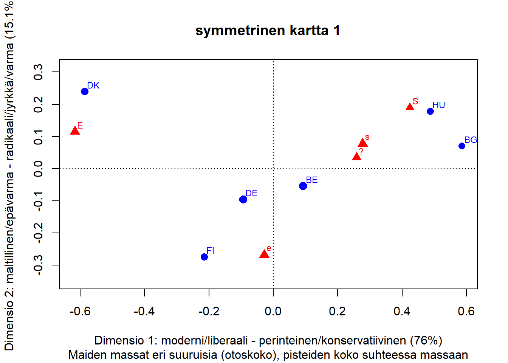
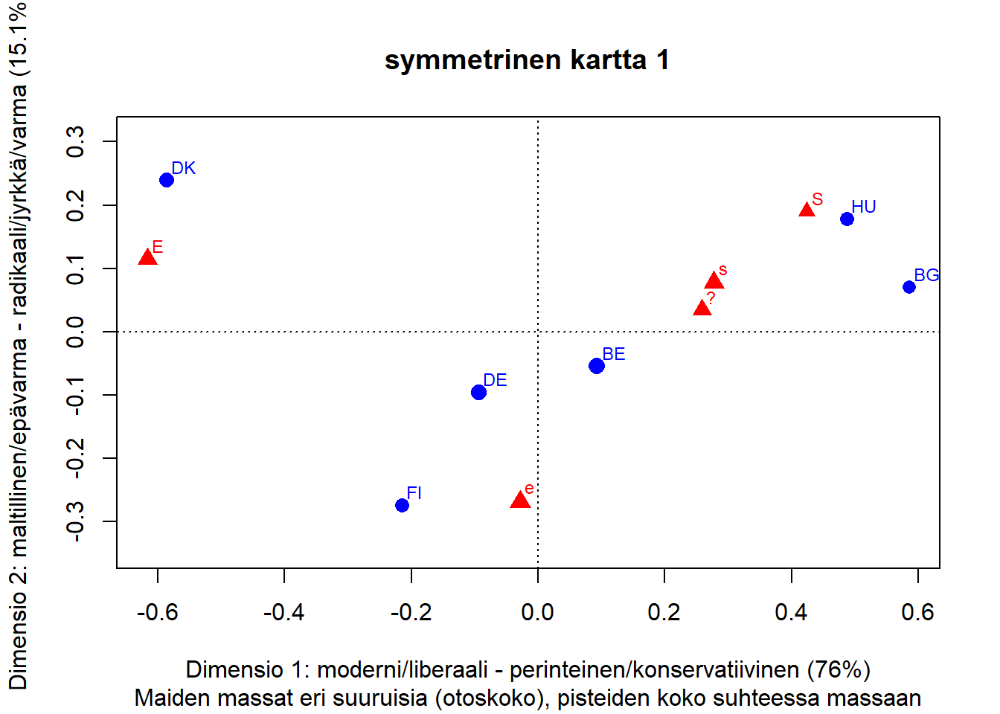 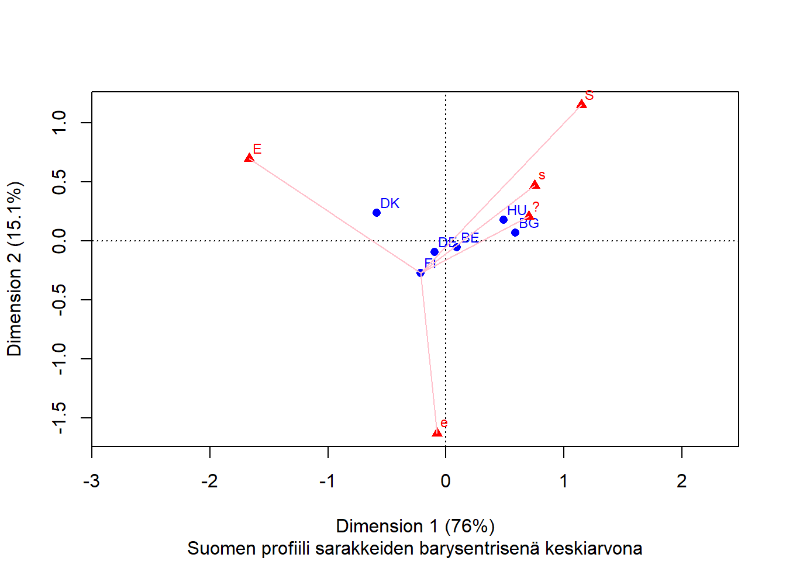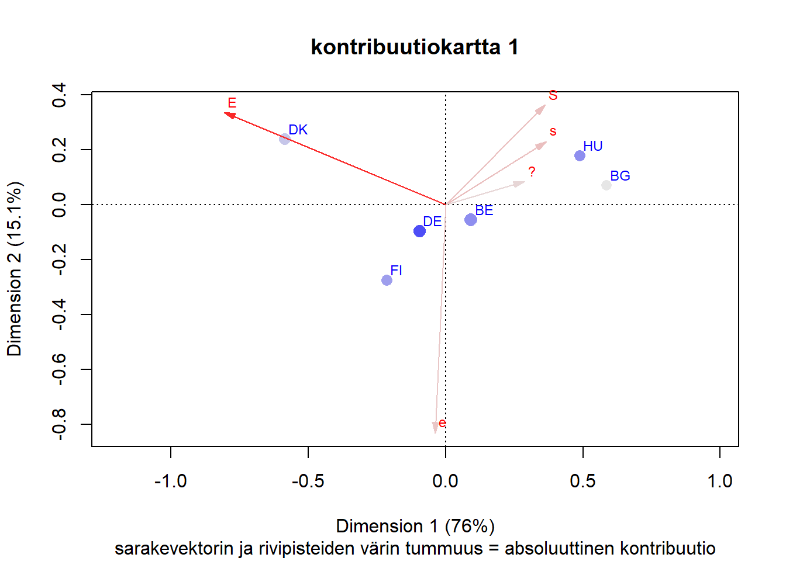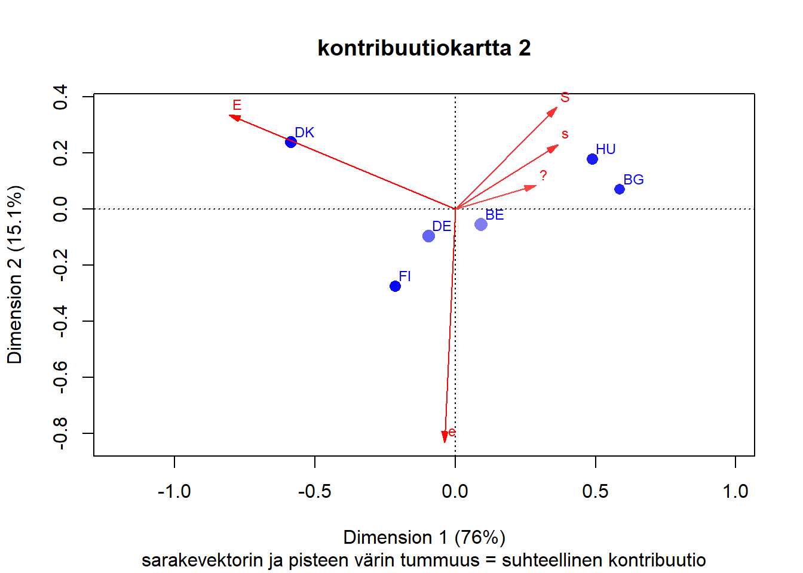
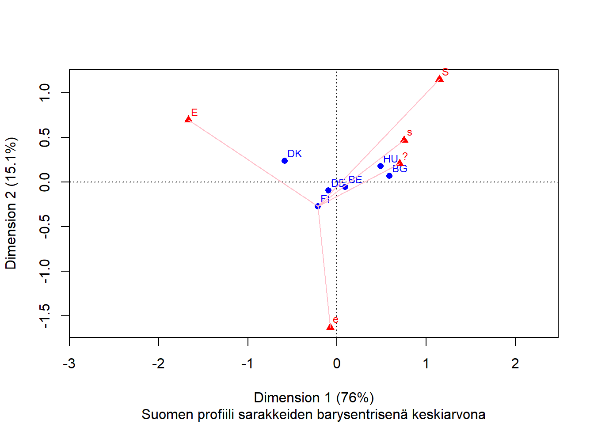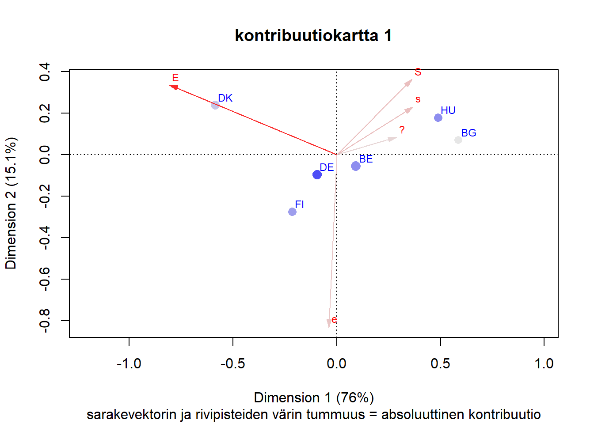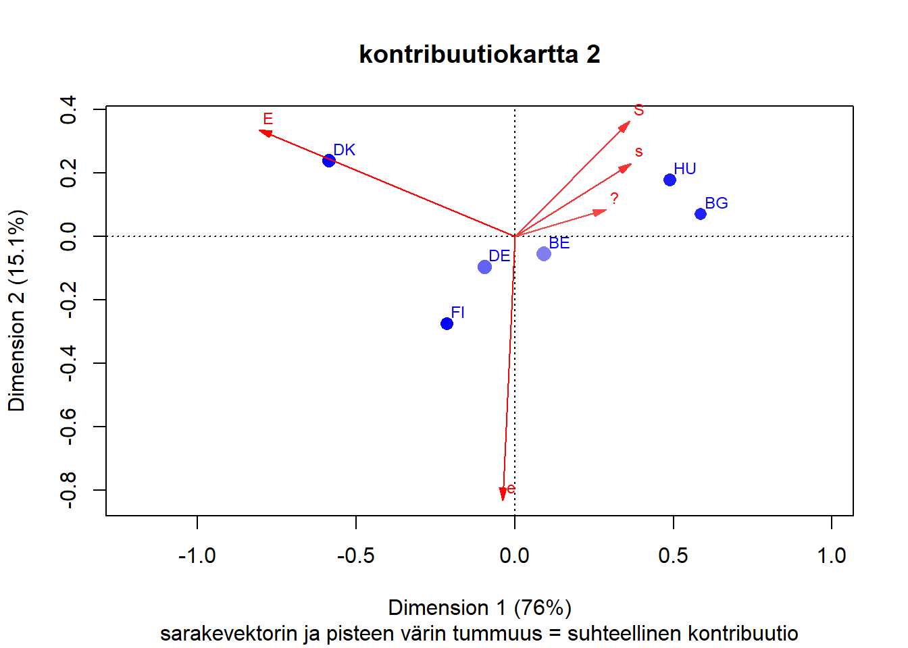
| / | S | s | ? | e | E |
|---|---|---|---|---|---|
| BE | 191 | 451 | 438 | 552 | 381 |
| BG | 0 | 0 | 0 | 0 | 0 |
| DE | 165 | 375 | 198 | 538 | 438 |
| DK | 0 | 0 | 0 | 0 | 0 |
| FI | 0 | 0 | 0 | 0 | 0 |
| HU | 0 | 0 | 0 | 0 | 0 |
| S | s | ? | e | E | |
|---|---|---|---|---|---|
| bF | 51 | 241 | 262 | 312 | 146 |
| bW | 53 | 103 | 91 | 118 | 125 |
| bB | 87 | 107 | 85 | 122 | 110 |
| BG | 118 | 395 | 205 | 190 | 13 |
| dW | 133 | 313 | 138 | 375 | 208 |
| dE | 32 | 62 | 60 | 163 | 230 |
| DK | 70 | 238 | 152 | 232 | 696 |
| FI | 47 | 188 | 149 | 423 | 303 |
| HU | 219 | 288 | 225 | 190 | 75 |
| BE | 191 | 451 | 438 | 552 | 381 |
| DE | 165 | 375 | 198 | 538 | 438 |
| S | s | ? | e | E | Total | |
|---|---|---|---|---|---|---|
| bF | 5.04 | 23.81 | 25.89 | 30.83 | 14.43 | 100.00 |
| bW | 10.82 | 21.02 | 18.57 | 24.08 | 25.51 | 100.00 |
| bB | 17.03 | 20.94 | 16.63 | 23.87 | 21.53 | 100.00 |
| BG | 12.81 | 42.89 | 22.26 | 20.63 | 1.41 | 100.00 |
| dW | 11.40 | 26.82 | 11.83 | 32.13 | 17.82 | 100.00 |
| dE | 5.85 | 11.33 | 10.97 | 29.80 | 42.05 | 100.00 |
| DK | 5.04 | 17.15 | 10.95 | 16.71 | 50.14 | 100.00 |
| FI | 4.23 | 16.94 | 13.42 | 38.11 | 27.30 | 100.00 |
| HU | 21.97 | 28.89 | 22.57 | 19.06 | 7.52 | 100.00 |
| All | 9.95 | 23.76 | 16.79 | 26.10 | 23.41 | 100.00 |
 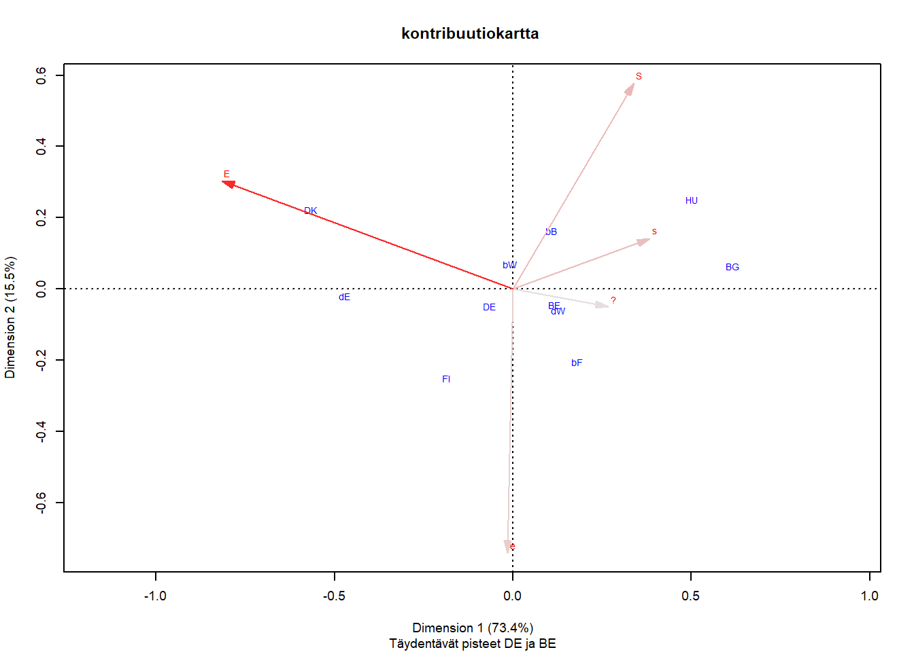
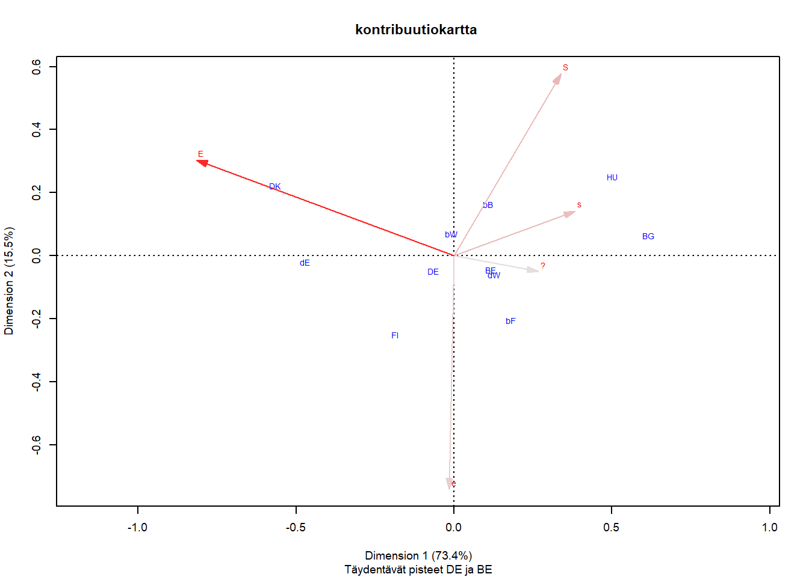
##
## Principal inertias (eigenvalues):
## 1 2 3 4
## Value 0.154101 0.032489 0.014294 0.008944
## Percentage 73.44% 15.48% 6.81% 4.26%
##
##
## Rows:
## bF bW bB BG dW dE DK
## Mass 0.124279 0.060174 0.062753 0.113103 0.143313 0.067174 0.170453
## ChiDist 0.341469 0.096258 0.239034 0.630991 0.219094 0.505720 0.634063
## Inertia 0.014491 0.000558 0.003586 0.045032 0.006879 0.017180 0.068528
## Dim. 1 0.400065 -0.090631 0.216912 1.502458 0.254323 -1.262007 -1.506022
## Dim. 2 -1.254042 0.267998 0.789358 0.236498 -0.451124 -0.226595 1.121468
## FI HU BE (*) DE (*)
## Mass 0.136313 0.122436 NA NA
## ChiDist 0.347733 0.550404 0.157974 0.175013
## Inertia 0.016483 0.037091 NA NA
## Dim. 1 -0.525222 1.215462 0.234127 -0.229593
## Dim. 2 -1.500986 1.280342 -0.364834 -0.379468
##
##
## Columns:
## S s ? e E
## Mass 0.099472 0.237627 0.167874 0.260960 0.234066
## ChiDist 0.592824 0.354761 0.332288 0.280549 0.672594
## Inertia 0.034959 0.029907 0.018536 0.020540 0.105887
## Dim. 1 1.073310 0.787257 0.649789 -0.029859 -1.688108
## Dim. 2 1.835133 0.290929 -0.119934 -1.451548 0.629110##
## Principal inertias (eigenvalues):
##
## dim value % cum% scree plot
## 1 0.154101 73.4 73.4 ******************
## 2 0.032489 15.5 88.9 ****
## 3 0.014294 6.8 95.7 **
## 4 0.008944 4.3 100.0 *
## -------- -----
## Total: 0.209828 100.0
##
##
## Rows:
## name mass qlt inr k=1 cor ctr k=2 cor ctr
## 1 | bF | 124 650 69 | 157 212 20 | -226 438 195 |
## 2 | bW | 60 388 3 | -36 137 0 | 48 252 4 |
## 3 | bB | 63 481 17 | 85 127 3 | 142 354 39 |
## 4 | BG | 113 878 215 | 590 874 255 | 43 5 6 |
## 5 | dW | 143 345 33 | 100 208 9 | -81 138 29 |
## 6 | dE | 67 966 82 | -495 960 107 | -41 7 3 |
## 7 | DK | 170 971 327 | -591 869 387 | 202 102 214 |
## 8 | FI | 136 957 79 | -206 352 38 | -271 605 307 |
## 9 | HU | 122 927 177 | 477 751 181 | 231 176 201 |
## 10 | (*)BE | <NA> 512 <NA> | 92 338 <NA> | -66 173 <NA> |
## 11 | (*)DE | <NA> 418 <NA> | -90 265 <NA> | -68 153 <NA> |
##
## Columns:
## name mass qlt inr k=1 cor ctr k=2 cor ctr
## 1 | S | 99 816 167 | 421 505 115 | 331 311 335 |
## 2 | s | 238 781 143 | 309 759 147 | 52 22 20 |
## 3 | | 168 594 88 | 255 589 71 | -22 4 2 |
## 4 | e | 261 871 98 | -12 2 0 | -262 870 550 |
## 5 | E | 234 999 505 | -663 971 667 | 113 28 93 |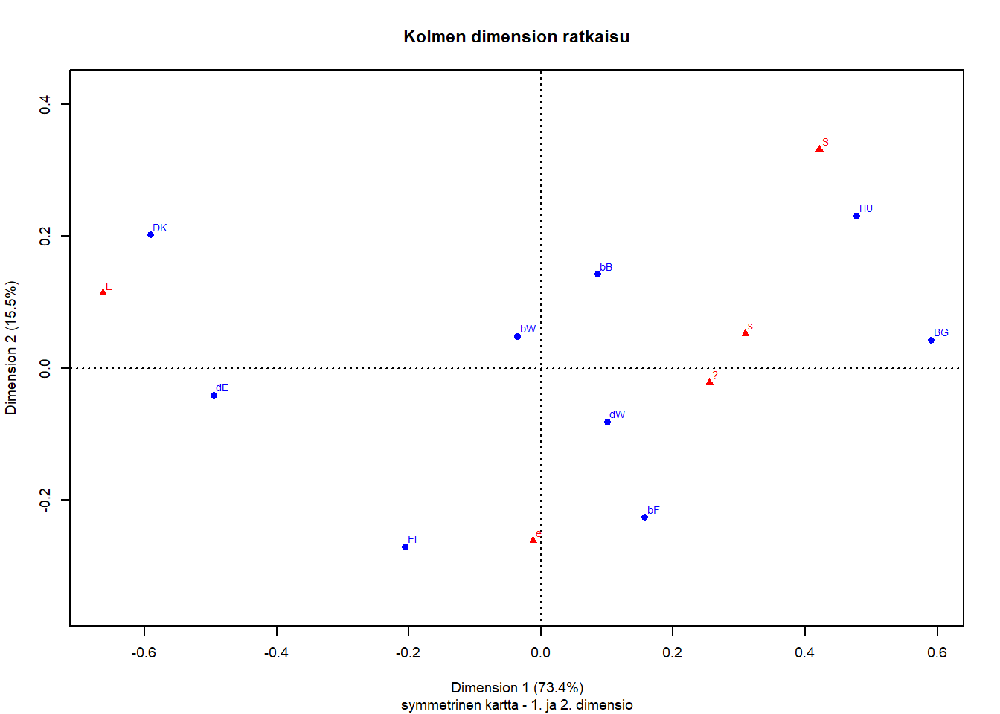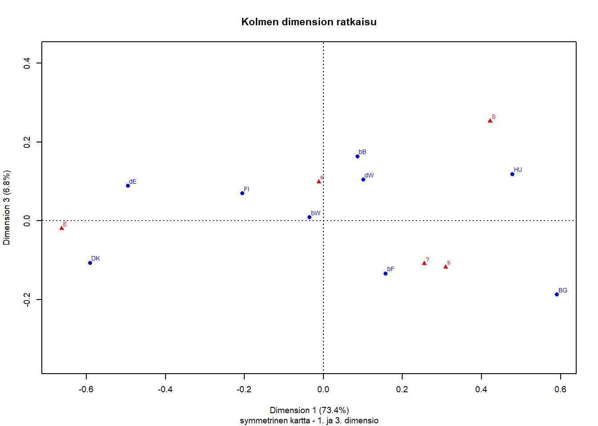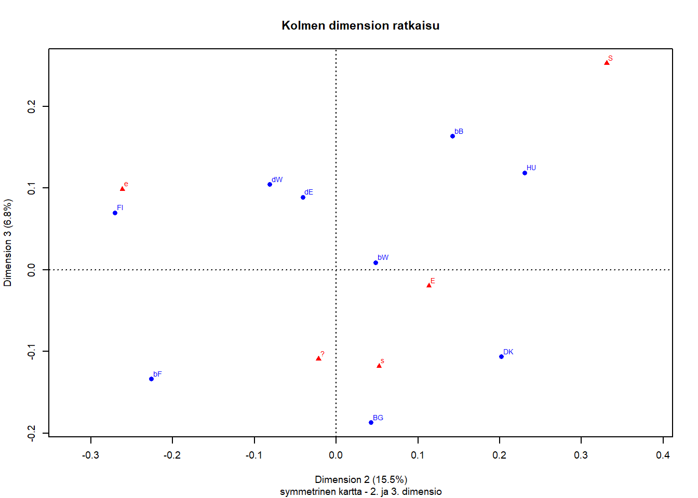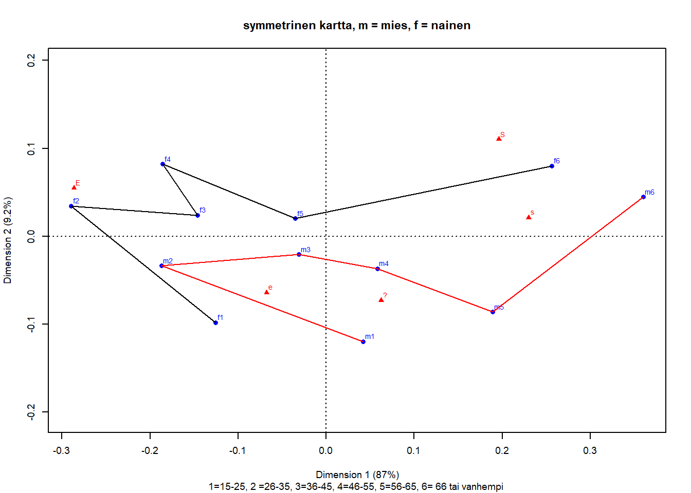
##
## Principal inertias (eigenvalues):
##
## dim value % cum% scree plot
## 1 0.037448 87.0 87.0 **********************
## 2 0.003977 9.2 96.2 **
## 3 0.001041 2.4 98.6 *
## 4 0.000590 1.4 100.0
## -------- -----
## Total: 0.043055 100.0
##
##
## Rows:
## name mass qlt inr k=1 cor ctr k=2 cor ctr
## 1 | f1 | 60 990 36 | -125 614 25 | -98 376 145 |
## 2 | f2 | 83 997 163 | -289 983 185 | 35 14 25 |
## 3 | f3 | 91 984 47 | -146 958 52 | 24 26 13 |
## 4 | f4 | 101 1000 97 | -186 836 93 | 82 164 172 |
## 5 | f5 | 98 879 4 | -35 658 3 | 20 221 10 |
## 6 | f6 | 100 951 176 | 256 866 175 | 80 85 162 |
## 7 | m1 | 57 659 32 | 42 72 3 | -120 587 205 |
## 8 | m2 | 66 977 57 | -187 946 62 | -34 30 19 |
## 9 | m3 | 78 457 5 | -31 318 2 | -20 139 8 |
## 10 | m4 | 89 674 14 | 58 482 8 | -37 192 30 |
## 11 | m5 | 89 988 90 | 189 818 85 | -86 170 166 |
## 12 | m6 | 89 978 277 | 360 963 307 | 45 15 45 |
##
## Columns:
## name mass qlt inr k=1 cor ctr k=2 cor ctr
## 1 | S | 99 915 128 | 196 695 102 | 110 220 304 |
## 2 | s | 238 969 304 | 230 961 336 | 21 8 27 |
## 3 | | 168 777 46 | 62 330 17 | -73 447 223 |
## 4 | e | 261 897 58 | -68 473 32 | -64 424 268 |
## 5 | E | 234 997 464 | -286 962 513 | 55 35 177 |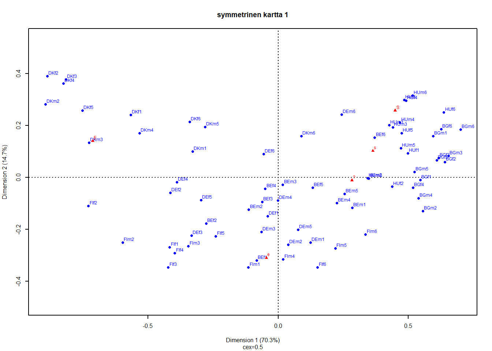
##
## Principal inertias (eigenvalues):
##
## dim value % cum% scree plot
## 1 0.184895 70.3 70.3 ******************
## 2 0.038751 14.7 85.0 ****
## 3 0.024006 9.1 94.1 **
## 4 0.015502 5.9 100.0 *
## -------- -----
## Total: 0.263154 100.0
##
##
## Rows:
## name mass qlt inr k=1 cor ctr k=2 cor ctr
## 1 | BEf1 | 14 678 9 | -83 43 1 | -320 635 38 |
## 2 | BEf2 | 24 914 11 | -278 650 10 | -177 264 20 |
## 3 | BEf3 | 21 320 3 | -62 96 0 | -95 224 5 |
## 4 | BEf4 | 24 164 3 | -50 92 0 | -44 71 1 |
## 5 | BEf5 | 23 332 5 | 133 304 2 | -40 28 1 |
## 6 | BEf6 | 23 832 17 | 371 710 17 | 153 121 14 |
## 7 | BEm1 | 11 429 9 | 284 367 5 | -117 62 4 |
## 8 | BEm2 | 17 372 5 | -113 169 1 | -125 203 7 |
## 9 | BEm3 | 20 108 1 | 17 29 0 | -29 79 0 |
## 10 | BEm4 | 22 966 5 | 225 812 6 | -98 154 5 |
## 11 | BEm5 | 22 728 8 | 255 686 8 | -63 42 2 |
## 12 | BEm6 | 26 788 15 | 348 788 17 | -5 0 0 |
## 13 | BGf1 | 5 531 11 | 547 531 8 | -9 0 0 |
## 14 | BGf2 | 8 860 14 | 640 853 17 | 59 7 1 |
## 15 | BGf3 | 12 815 21 | 617 804 24 | 75 12 2 |
## 16 | BGf4 | 10 932 12 | 519 927 15 | -39 5 0 |
## 17 | BGf5 | 14 880 23 | 609 870 28 | 66 10 2 |
## 18 | BGf6 | 18 921 32 | 627 846 39 | 186 74 16 |
## 19 | BGm1 | 5 940 7 | 596 878 9 | 159 62 3 |
## 20 | BGm2 | 6 830 9 | 557 788 11 | -130 43 3 |
## 21 | BGm3 | 8 709 19 | 655 698 19 | 83 11 1 |
## 22 | BGm4 | 8 771 11 | 540 754 12 | -81 17 1 |
## 23 | BGm5 | 10 979 11 | 524 977 15 | 21 2 0 |
## 24 | BGm6 | 9 692 27 | 701 647 24 | 184 45 8 |
## 25 | DEf1 | 13 425 3 | -41 29 0 | -149 395 7 |
## 26 | DEf2 | 15 938 10 | -415 919 14 | -60 19 1 |
## 27 | DEf3 | 19 846 13 | -333 582 11 | -224 264 24 |
## 28 | DEf4 | 23 985 13 | -390 982 19 | -18 2 0 |
## 29 | DEf5 | 17 839 7 | -297 772 8 | -87 67 3 |
## 30 | DEf6 | 23 116 8 | -56 32 0 | 90 84 5 |
## 31 | DEm1 | 13 912 4 | 124 180 1 | -250 732 20 |
## 32 | DEm2 | 13 766 4 | 38 16 0 | -259 749 22 |
## 33 | DEm3 | 15 737 4 | -64 63 0 | -210 674 17 |
## 34 | DEm4 | 21 137 5 | -1 0 0 | -89 137 4 |
## 35 | DEm5 | 19 603 5 | 76 75 1 | -202 529 20 |
## 36 | DEm6 | 22 849 12 | 244 427 7 | 242 422 34 |
## 37 | DKf1 | 10 991 15 | -567 839 18 | 241 152 15 |
## 38 | DKf2 | 14 991 49 | -888 831 58 | 389 160 53 |
## 39 | DKf3 | 17 963 53 | -816 793 60 | 377 170 61 |
## 40 | DKf4 | 18 977 57 | -826 820 66 | 362 157 61 |
## 41 | DKf5 | 16 998 38 | -753 894 48 | 258 105 27 |
## 42 | DKf6 | 12 808 9 | -340 579 8 | 214 229 14 |
## 43 | DKm1 | 15 981 7 | -329 898 9 | 100 83 4 |
## 44 | DKm2 | 13 989 43 | -895 900 55 | 282 89 26 |
## 45 | DKm3 | 13 982 28 | -728 950 38 | 134 32 6 |
## 46 | DKm4 | 15 941 19 | -534 855 24 | 170 86 11 |
## 47 | DKm5 | 13 643 9 | -281 435 6 | 194 208 13 |
## 48 | DKm6 | 15 355 5 | 89 85 1 | 158 270 9 |
## 49 | FIf1 | 12 980 11 | -417 693 11 | -269 287 21 |
## 50 | FIf2 | 12 927 26 | -730 907 34 | -110 21 4 |
## 51 | FIf3 | 12 984 13 | -423 590 11 | -346 394 36 |
## 52 | FIf4 | 14 991 14 | -398 644 12 | -292 347 32 |
## 53 | FIf5 | 17 952 8 | -240 502 5 | -227 450 23 |
## 54 | FIf6 | 11 835 7 | 151 134 1 | -347 701 35 |
## 55 | FIm1 | 7 787 5 | -115 78 1 | -347 710 22 |
## 56 | FIm2 | 9 977 14 | -598 832 17 | -250 146 14 |
## 57 | FIm3 | 9 998 6 | -345 629 6 | -265 369 16 |
## 58 | FIm4 | 13 837 6 | 19 3 0 | -316 834 33 |
## 59 | FIm5 | 12 734 7 | 220 289 3 | -273 446 23 |
## 60 | FIm6 | 9 911 6 | 336 637 6 | -220 274 12 |
## 61 | HUf1 | 7 723 9 | 499 698 9 | 93 25 1 |
## 62 | HUf2 | 11 689 11 | 438 685 11 | -35 4 0 |
## 63 | HUf3 | 12 808 18 | 484 586 15 | 298 222 27 |
## 64 | HUf4 | 11 768 18 | 491 564 15 | 296 204 25 |
## 65 | HUf5 | 12 850 13 | 474 753 14 | 170 97 9 |
## 66 | HUf6 | 13 671 34 | 637 581 28 | 251 90 21 |
## 67 | HUm1 | 6 935 5 | 426 766 6 | 201 170 6 |
## 68 | HUm2 | 9 381 11 | 344 381 6 | -2 0 0 |
## 69 | HUm3 | 13 957 12 | 441 803 13 | 193 154 12 |
## 70 | HUm4 | 10 999 10 | 468 830 12 | 211 169 11 |
## 71 | HUm5 | 13 942 12 | 472 891 15 | 113 51 4 |
## 72 | HUm6 | 8 726 15 | 517 529 11 | 315 197 20 |
##
## Columns:
## name mass qlt inr k=1 cor ctr k=2 cor ctr
## 1 | S | 99 653 155 | 450 492 109 | 258 162 171 |
## 2 | s | 238 741 174 | 364 687 170 | 102 54 63 |
## 3 | | 168 535 96 | 284 534 73 | -11 1 1 |
## 4 | e | 261 941 103 | -45 20 3 | -310 921 646 |
## 5 | E | 234 1000 471 | -714 962 645 | 141 37 119 |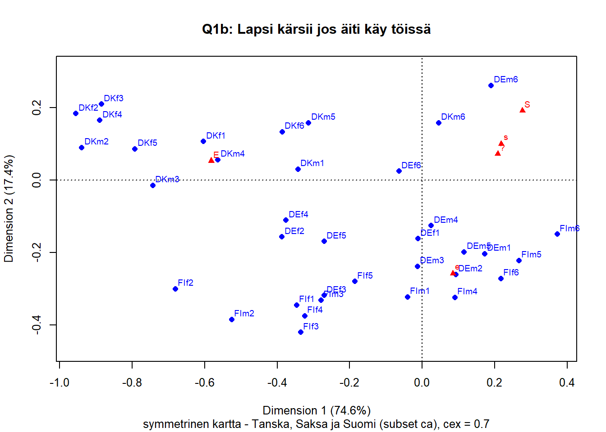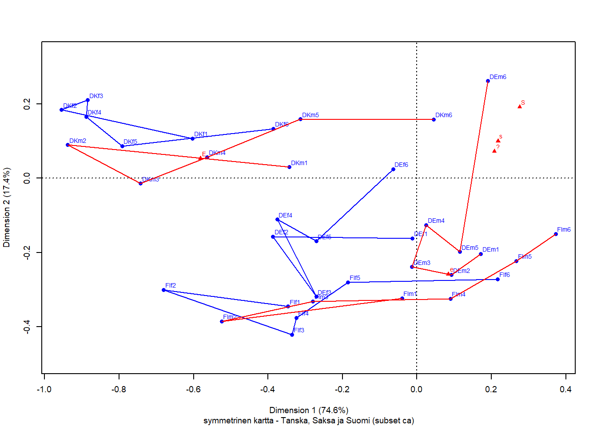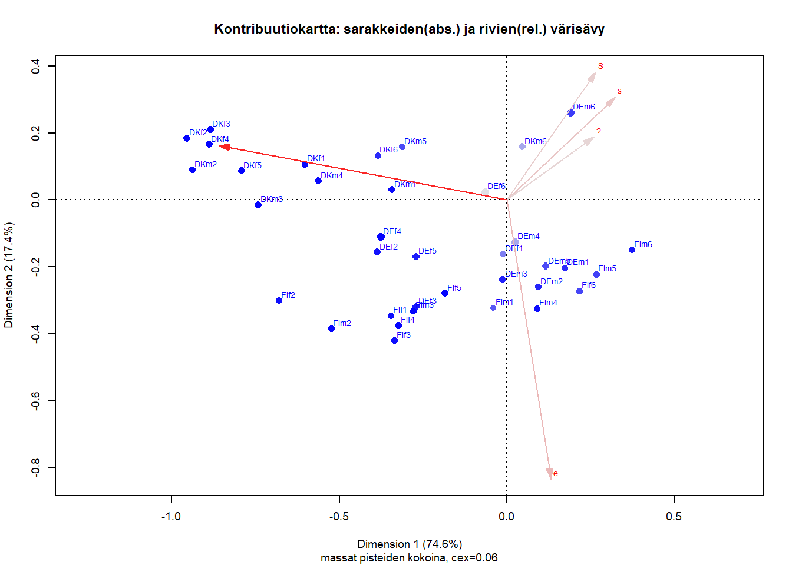
##
## Principal inertias (eigenvalues):
##
## dim value % cum% scree plot
## 1 0.107090 74.6 74.6 *******************
## 2 0.024985 17.4 92.0 ****
## 3 0.006594 4.6 96.6 *
## 4 0.004882 3.4 100.0 *
## -------- -----
## Total: 0.143551 100.0
##
##
## Rows:
## name mass qlt inr k=1 cor ctr k=2 cor ctr
## 1 | DEf1 | 13 467 5 | -12 3 0 | -162 464 13 |
## 2 | DEf2 | 15 930 19 | -387 799 21 | -157 131 14 |
## 3 | DEf3 | 19 919 25 | -271 385 13 | -318 533 76 |
## 4 | DEf4 | 23 993 25 | -376 913 30 | -111 80 11 |
## 5 | DEf5 | 17 893 13 | -271 641 11 | -169 252 19 |
## 6 | DEf6 | 23 48 15 | -64 42 1 | 24 6 1 |
## 7 | DEm1 | 13 827 8 | 172 345 3 | -203 482 21 |
## 8 | DEm2 | 13 855 8 | 93 96 1 | -260 759 34 |
## 9 | DEm3 | 15 874 7 | -13 3 0 | -238 871 34 |
## 10 | DEm4 | 21 285 8 | 25 11 0 | -126 274 13 |
## 11 | DEm5 | 19 684 10 | 116 174 2 | -198 510 30 |
## 12 | DEm6 | 22 750 22 | 190 260 8 | 261 490 61 |
## 13 | DKf1 | 10 979 27 | -603 949 35 | 107 30 5 |
## 14 | DKf2 | 14 996 89 | -955 960 115 | 184 36 18 |
## 15 | DKf3 | 17 985 98 | -885 933 122 | 210 53 29 |
## 16 | DKf4 | 18 983 104 | -889 950 132 | 165 33 20 |
## 17 | DKf5 | 16 1000 69 | -792 988 92 | 86 12 5 |
## 18 | DKf6 | 12 834 17 | -386 745 17 | 133 89 9 |
## 19 | DKm1 | 15 978 13 | -342 971 17 | 30 7 1 |
## 20 | DKm2 | 13 997 79 | -938 988 104 | 90 9 4 |
## 21 | DKm3 | 13 989 52 | -743 989 69 | -14 0 0 |
## 22 | DKm4 | 15 962 36 | -563 952 45 | 57 10 2 |
## 23 | DKm5 | 13 682 16 | -314 543 12 | 159 139 13 |
## 24 | DKm6 | 15 291 9 | 45 22 0 | 158 269 15 |
## 25 | FIf1 | 12 951 20 | -346 478 13 | -345 474 55 |
## 26 | FIf2 | 12 941 48 | -680 788 50 | -300 153 42 |
## 27 | FIf3 | 12 952 24 | -335 370 12 | -420 582 82 |
## 28 | FIf4 | 14 999 25 | -323 426 14 | -375 573 82 |
## 29 | FIf5 | 17 982 14 | -185 299 6 | -280 683 55 |
## 30 | FIf6 | 11 704 13 | 217 274 5 | -271 430 33 |
## 31 | FIm1 | 7 624 8 | -40 10 0 | -323 614 30 |
## 32 | FIm2 | 9 984 26 | -525 640 22 | -385 344 52 |
## 33 | FIm3 | 9 990 12 | -279 412 6 | -331 578 38 |
## 34 | FIm4 | 13 944 11 | 90 67 1 | -324 877 54 |
## 35 | FIm5 | 12 722 14 | 267 426 8 | -222 295 23 |
## 36 | FIm6 | 9 911 11 | 373 785 12 | -150 126 8 |
##
## Columns:
## name mass qlt inr k=1 cor ctr k=2 cor ctr
## 1 | S | 99 731 107 | 276 493 71 | 192 238 147 |
## 2 | s | 238 832 114 | 218 688 105 | 100 144 94 |
## 3 | | 168 647 88 | 208 576 68 | 73 70 35 |
## 4 | e | 261 992 135 | 85 96 17 | -258 896 697 |
## 5 | E | 234 1000 556 | -582 992 739 | 53 8 27 |
##
## Principal inertias (eigenvalues):
##
## dim value % cum% scree plot
## 1 0.086111 72.0 72.0 ******************
## 2 0.018841 15.8 87.8 ****
## 3 0.011172 9.3 97.1 **
## 4 0.003477 2.9 100.0 *
## -------- -----
## Total: 0.119602 100.0
##
##
## Rows:
## name mass qlt inr k=1 cor ctr k=2 cor ctr
## 1 | BEf1 | 14 152 19 | -156 152 4 | 2 0 0 |
## 2 | BEf2 | 24 826 24 | -313 824 28 | 13 1 0 |
## 3 | BEf3 | 21 623 7 | -90 201 2 | 130 422 19 |
## 4 | BEf4 | 24 556 6 | -65 155 1 | 105 401 14 |
## 5 | BEf5 | 23 355 11 | 115 227 3 | 86 128 9 |
## 6 | BEf6 | 23 810 37 | 396 810 41 | 10 0 0 |
## 7 | BEm1 | 11 288 21 | 246 274 8 | 55 14 2 |
## 8 | BEm2 | 17 333 11 | -144 271 4 | 68 61 4 |
## 9 | BEm3 | 20 531 2 | 6 4 0 | 75 528 6 |
## 10 | BEm4 | 22 620 11 | 197 618 10 | -8 1 0 |
## 11 | BEm5 | 22 917 18 | 243 620 15 | -168 297 33 |
## 12 | BEm6 | 26 977 33 | 347 782 36 | -173 195 41 |
## 13 | BGf1 | 5 979 23 | 557 549 18 | -492 430 63 |
## 14 | BGf2 | 8 974 32 | 649 875 38 | -219 99 20 |
## 15 | BGf3 | 12 1000 46 | 633 844 54 | -271 155 45 |
## 16 | BGf4 | 10 847 25 | 496 847 30 | 7 0 0 |
## 17 | BGf5 | 14 961 50 | 618 894 62 | -168 66 21 |
## 18 | BGf6 | 18 939 71 | 658 931 92 | -60 8 4 |
## 19 | BGm1 | 5 999 15 | 608 912 19 | 188 87 9 |
## 20 | BGm2 | 6 892 21 | 526 703 20 | -273 189 25 |
## 21 | BGm3 | 8 994 41 | 677 746 43 | -390 247 64 |
## 22 | BGm4 | 8 669 25 | 508 666 23 | -34 3 0 |
## 23 | BGm5 | 10 949 24 | 516 947 32 | -22 2 0 |
## 24 | BGm6 | 9 978 58 | 748 737 60 | -428 241 89 |
## 25 | HUf1 | 7 888 20 | 493 681 19 | 271 207 26 |
## 26 | HUf2 | 11 762 25 | 406 589 20 | 220 173 27 |
## 27 | HUf3 | 12 916 39 | 525 688 37 | 301 227 56 |
## 28 | HUf4 | 11 970 40 | 528 651 36 | 370 319 81 |
## 29 | HUf5 | 12 985 29 | 490 802 32 | 234 183 34 |
## 30 | HUf6 | 13 933 75 | 655 614 64 | 472 319 151 |
## 31 | HUm1 | 6 948 12 | 455 871 14 | 135 77 6 |
## 32 | HUm2 | 9 902 24 | 312 313 10 | 428 589 90 |
## 33 | HUm3 | 13 945 26 | 477 938 33 | -41 7 1 |
## 34 | HUm4 | 10 965 22 | 503 960 29 | 36 5 1 |
## 35 | HUm5 | 13 993 26 | 478 916 33 | 139 77 13 |
## 36 | HUm6 | 8 839 33 | 560 622 29 | 331 217 46 |
##
## Columns:
## name mass qlt inr k=1 cor ctr k=2 cor ctr
## 1 | S | 99 944 214 | 351 479 142 | 346 465 630 |
## 2 | s | 238 942 247 | 297 711 244 | -169 231 362 |
## 3 | | 168 435 107 | 180 426 63 | 26 9 6 |
## 4 | e | 261 640 65 | -138 639 57 | -4 0 0 |
## 5 | E | 234 966 368 | -426 965 494 | 10 1 1 |
Lähteet
(2016), ISSP Research Group. 2016. ”International Social Survey Programme: Family and Changing Gender Roles IV - ISSP 2012”. https://doi.org/10.4232/1.12661.
Blasius, Jörg, ja Victor Thiessen. 2006. ”Assessing Data Quality and Construct Comparability in Cross-National Surveys”. European Sociological Review 22 (3): 229–42. http://www.jstor.org/stable/3806519.
Greenacre, Michael. 2003. ”Singular value decomposition of matched matrices”. Journal of Applied Statistics 30 (10): 1101–13. https://doi.org/10.1080/0266476032000107132.
———. 2017. ”Multiple Correspondence Analysis (MCA): Theory and Practice, spring 2017 (University of Helsinki )”. https://moodle.helsinki.fi/course/search.php?search=correspondence+analysis.
Greenacre, Michael, ja Jörg Blasius. 2006. Multiple correspondence analysis and related methods. Boca Raton (FL): Chapman & Hall/CRC. https://helka.finna.fi/Record/helka.2018050.
Greenacre, Michael, ja Trevor Hastie. 1987. ”The Geometric Interpretation of Correspondence Analysis”. Journal of the American Statistical Association 82 (398): 437–47. https://doi.org/10.1080/01621459.1987.10478446.
Greenacre, Michael J. 2010. Biplots in Practice. Bilbao, Spain: Fundacion BBVA. https://www.fbbva.es/microsite/multivariate-statistics/biplots.html.
———. 2017. Correspondence analysis in practice. Third edition. Boca Raton, Florida: CRC Press. https://helka.finna.fi/Record/helka.3029760.
Greenacre, Michael, ja Rafael Pardo. 2006. ”Subset Correspondence Analysis: Visualizing Relationships Among a Selected Set of Response Categories From a Questionnaire Survey”. Sociological Methods & Research 35 (2): 193–218. https://doi.org/10.1177/0049124106290316.
McNamara, Amelia, ja Nicholas J. Horton. 2018. ”Wrangling Categorical Data in R”. The American Statistician 72 (1): 97–104. https://doi.org/10.1080/00031305.2017.1356375.
Mustonen, Seppo. 1995. Tilastolliset monimuuttujamenetelmät. Helsinki: Survo Systems. http://www.survo.fi/mustonen/monim.pdf.
Roux, Brigitte Le, ja Henry Rouanet. 2004. Geometric data analysis: from correspondence analysis to structured data analysis. Dordrecht: Kluwer Academic Publishers.
Vehkalahti, Kimmo. 2008. Kyselytutkimuksen mittarit ja menetelmät. Helsinki: Tammi. https://helka.finna.fi/Record/helka.2120450.
Walter, Jessica. 2018. ”The adequacy of measures of gender roles attitudes: a review of current measures in omnibus surveys”. Quality & Quantity 52 (2): 829–48. https://doi.org/10.1007/s11135-017-0491-x.
Xie, Yihui. 2016. bookdown: Authoring Books and Technical Documents with R Markdown. Chapman; Hall/CRC. https://bookdown.org/yihui/bookdown/.
———. 2020. bookdown: Authoring Books and Technical Documents with R Markdown. https://github.com/rstudio/bookdown.
Yihui Xie, Garrett Grolemund, J. J. Allaire. 2018. R Markdown: The Definitive Guide. Chapman; Hall/CRC. https://bookdown.org/yihui/rmarkdown/.